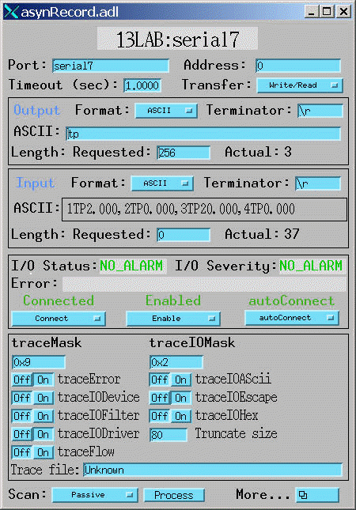
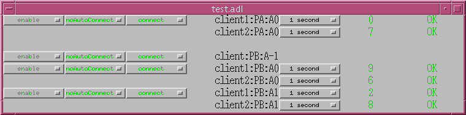

Release 4.5
Marty Kraimer, Eric Norum and Mark Rivers
March 2, 2006
Gasper Jansa (cosyLab) - linuxGpib support.
This product is available via the open source license described at the end of this document.
asynDriver is a general purpose facility for interfacing device specific code to low level drivers. asynDriver allows non-blocking device support that works with both blocking and non-blocking drivers.
A primary target for asynDriver is EPICS IOC device support but, other than using libCom, much of it is independent of EPICS.
asynDriver has the following key concepts:
Drivers take care of the details of how to communicate with a device and implement interfaces for use by device support. Interfaces are defined for both message and register based devices. In the past when support was written for a new type of device, device support for standard EPICS records had to be written in addition to the driver support. Now a driver just implements one or more of the standard interfaces.
A port, which has a portName, identifies a communication path to one or more device instances. For example a GPIB port can have up to 15 devices connected to it. An RS232 port communicates with a single device. Drivers register a port. Device support connects to a port.
asynManager, a component of asynDriver, provides exclusive access to a driver via calls to queueRequest or lockPort/unlockPort. Once device support has access, it can make an arbitrary number of calls to the driver knowing that no other support can call the driver. Device and driver support do not need to implement queues or semaphores since asynManager does this for them.
Rules are defined for providing diagnostic messages. Provided device and driver support follow the rules, a user can obtain several levels of diagnostic information that can be displayed on the console, written to a file, or sent to the EPICS errlog facility.
asynRecord is an EPICS record and set of associated MEDM displays that provide access to:
The port or port,addr can be changed dynamically. Thus with one asynRecord in an IOC, it is possible to talk to any device that has an asyn compatible driver.
Display and change connection, enable, and autoConnect state
These can be used to communicate with devices. For example if a new instrument arrives that has a serial, gpib, or ethernet port, then it is often possible to communicate with it just by attaching an asynRecord to it.
asynDriver provides many facilities for communicating with RS232, RS485, GPIB, and ethernet.
This version provides
The following are some of the existing EPICS general purpose device support systems that have been converted to use asynDriver.
The following are some of the existing EPICS general purpose device support systems that could be converted to use asynDriver.
Each of these systems is used at EPICS facilities for accessing GPIB and/or serial devices. Because device support has been written for many instruments and thousands of database records use the device support, users will not be easily persuaded to switch from their existing solution. Thus, asynDriver implements a framework below device support that can be used by all of the above systems so that all can share the same drivers.
Each system needs to be modified so that the device support component is compatible with existing use, but replace the driver part with asynDriver. The benefit is that all could share the same set of low level drivers.
gpibCore and mpfSerial have already been converted and are included with asynDriver.
Dirk Zimoch has created a version of STREAMS that uses asynDriver.
Hopefully Allen Honey will get time to convert devAscii.
In the future, other protocols will be supported, especially for Ethernet based devices.
The idea of creating asynDriver resulted from many years of experience with writing device support for serial and GPIB devices. The following individuals have been most influential.
asynDriver is a software layer between device specific code and drivers that communicate with devices. It supports both blocking and non-blocking communication and can be used with both register and message based devices. asynDriver uses the following terminology:
All communication between software layers is done via interfaces. An interface definition is a C language structure consisting entirely of function pointers. An asynDriver interface is analogous to a C++ or Java pure virtual interface. Although the implementation is in C, the spirit is object oriented. Thus this document uses the term "method" rather than "function pointer".
A physical or logical entity which provides access to a device. A port provides access to one or more devices.
Code that communicates with a port.
If a portDriver can block, a thread is created for each port, and all I/O to the portDriver is done via this thread.
A device (instrument) connected to a port. For example a GPIB interface can have up to 15 devices connected to it. Other ports, e.g. EIA232 serial ports, only support a single device. Whenever this document uses the word device without a qualifier, it means something that is connected to a port.
Code that interacts with a device.
Support that does not voluntarily give up control of the CPU.
Support that is not synchronous. Some examples of asynchronous operations are epicsThreadSleep, epicsEventWait, and stdio operations. Calls to epicsMutexTake are considered to be synchronous operations, i.e. they are permitted in synchronous support.
The name for the support described in this manual. It is also the name of the header file that describes the core interfaces.
An interface and the code which implements the methods for interfaces asynManager and asynTrace.
A driver that blocks while communicating with a device. Typical examples are serial, gpib, and network based drivers.
A driver that does not block while communicating with a device. Typical examples are VME register based devices.
Interfaces that use octet arrays for read/write operations.
Interfaces that use integers or floats for read/write operations.
As implemented by asynManager, interrupt just means "I have a new value for port, address".
Synchronous/asynchronous and message/register are orthogonal concepts. For example a register based driver can be either synchronous or asynchronous. The terminology register vs message is adapted from VXI.
Standard interfaces are defined so that device specific code can communicate with multiple port drivers. For example if device support does all its communication via reads and writes consisting of 8 bit bytes (octets), then it should work with all port drivers that support octet messages. If device support requires more complicated support, then the types of ports will be more limited. Standard interfaces are also defined for drivers that accept 32 bit integers or 64 bit floats. Additional interfaces can be defined, and it is expected that additional standard interfaces will be defined.
One or more devices can be attached to a port. For example, only one device can be attached to an RS-232 port, but up to 15 devices can be attached to a GPIB port.
Multiple layers can exist between device specific code and a port driver. A software layer calls interposeInterface in order to be placed between device specific code and drivers. For more complicated protocols, additional layers can be created. For example, GPIB support is implemented as an asynGpib interface which is called by user code, and an asynGpibPort interface which is called by asynGpib.
A driver normally implements multiple interfaces. For example asynGpib implements asynCommon, asynOctet, and asynGpib.
asynManager uses the Operating System Independent features of EPICS base. It is, however, independent of record/device support. Thus, it can be used by other code, e.g. a sequence program.
These are interfaces provided by asynManager or interfaces implemented by all or most port drivers.
The interfaces are:
asynManager provides services for communicating with a device connected to a port.
asynCommon is an interface that must be implemented by all low level drivers. The methods are:
asynTrace is an interface for generating diagnostic messages.
asynLockPortNotify is an interface that is implemented by a driver which is an asynUser of another driver. An example is a serial bus driver that uses standard serial support. asynManager calls asynLockPortNotify whenever it locks or unlocks the port.
asynDrvUser is an interface for communicating information from device support to a driver without the device support knowing any details about what is passed.
In addition to asynCommon and optionally asynDrvUser, port drivers can implement one or more of the following message and/or register based interfaces.
asynOctet methods for message based devices
asynFloat64 methods for devices that read/write IEEE float values
asynFloat64Array methods for devices that read/write arrays of IEEE float values
asynInt32 methods for devices that read/write integer values. Many analog I/O drivers can use this interface.
asynInt32Array methods for devices that read/write arrays of integer values
asynUInt32Digital methods for devices that read/write arrays of digital values. This interface provides a mask to address individual bits within registers.
asynManager is an interface and associated code. It is the "heart" of asynDriver since it manages the interactions between device support code and drivers. It provides the following services:
Method: report
Methods: createAsynUser, duplicateAsynUser, freeAsynUser
An asynUser is a "handle" for accessing asynManager services and for calling interfaces implemented by drivers. An asynUser must only be created via a call to createAsynUser or duplicateAsynUser since asynManager keeps private information for each asynUser. freeAsynUser puts the asynUser on a free list rather than calling free. Clients can continually create and free asynUsers quickly and without fragmenting memory.
The call to createAsynUser specifies a processCallback and a timeoutCallback. These are the callbacks that will be called as a result of a queueRequest.
An asynUser should not be shared between parts of code that can simultaneously access a driver. For example device support for standard EPICS records should create an asynUser for each record instance.
Methods: connectDevice, disconnect, findInterface
These methods should only be called by the code that created the asynUser.
After an asynUser is created the user calls connectDevice. The user is connected to a port driver that can communicate with a device. findInterface is called for each interface the user requires. disconnect is called when the user is done with the device.
Methods: queueRequest, cancelRequest, lockPort, unlockPort, blockProcessCallback, unblockProcessCallback
queueRequest is a request to call the processCallback specified in the call to createAsynUser. Most interface methods must only be called from processCallback via a call to queueRequest or between calls to lockPort/unlockPort.. Exceptions to this rule must be clearly documented ( a common exception are methods registerInterruptUser/cancelInterruptUser).
queueRequest semantics differ for ports that can block and ports that do not block
When registerPort is called by a driver that can block, a thread is created for the port. A set of queues, based on priority, is created for the thread. queueRequest puts the request on one of the queues. The port thread takes the requests from the queues and calls the associated callback. Only one callback is active at a time.
When registerPort is called by a driver that does not block, a mutex is created for the port. queueRequest takes the mutex, calls the callback, and releases the mutex. The mutex guarantees that two callbacks to a port are not active at the same time.
lockPort is a request to lock all access to low level drivers until unlockPort is called. If the port blocks then lockPort and all calls to the port driver may block. lockPort/unlockPort are provided for use by code that is willing to block or for communication with synchronous ports. A call to lockPort locks all addresses associated with a multi-address port.
blockProcessCallback is a request to prevent acccess to a device or port by other asynUsers between queueRequests. blockProcessCallback can be called from a processCallback or when the asynUser has no request queued. When called from processCallback blocking starts immediately, otherwise blocking starts the next time processCallback is called. Blocking means that no other asynUser's processCallback will be called until unblockProcessCallback is called. blockProcessCallback only works with drivers that can block and an error is returned if it is called for non-blocking drivers.
Methods: registerPort,registerInterface
registerPort is called by a portDriver. registerInterface is called by a portDriver or an interposeInterface.
Each port driver provides a configuration command that is executed for each port instance. The configuration command performs port specific initializations, calls registerPort, and registerInterface for each interface it implements.
Methods: isMultiDevice, canBlock, getAddr, getPortName, isConnected, isEnabled, isAutoConnect
These methods can be called by any code that has access to the asynUser
Methods: enable,autoConnect
These methods can be called by any code that has access to the asynUser.
These methods can be called to set the enable and autoConnect settings for a port and/or device. queueManager implements autoConnect by calling asynCommon:connect just before it calls processCallback. It does this if autoConnect is true and a port/device is enabled but not connected.
Methods: exceptionCallbackAdd, exceptionCallbackRemove, exceptionConnect, exceptionDisconnect
Device support code calls exceptionCallbackAdd and exceptionCallbackRemove. The complete list of exceptions is defined in asynDriver.h as "enum asynException".
Whenever a port driver connects or disconnects, normally as a result of a call to asynCommon:connect or asynCommon:disconnect, it must also call exceptionConnect or exceptionDisconnect.
Methods: registerInterruptSource, getInterruptPvt, createInterruptNode, freeInterruptNode, addInterruptUser, removeInterruptUser, interruptStart, interruptEnd
Interrupt just means: "I have a new value." Many asyn interfaces, e.g. asynInt32, provide interrupt support. These interfaces provide methods addInterruptUser and removeInterruptUser. Device support calls addInterruptUser if it wants to be called whenever an interrupt occurs. Drivers or other code that implements the interface calls the registered users when it has new data. asynManager provides services that help drivers implement thread-safe support for interrupts.
A driver that supports interrupts calls registerInterruptSource for each interface that has associated interrupts. It calls interruptStart to obtain a list of all registered users and interruptEnd after it calls the registered users. The driver is also responsible for calling addInterruptUser and removeInterruptUser.
If any calls are made to addInterruptUser or removeInterruptUser between the calls to interruptStart and interruptEnd, asynManager puts the request on a list and processes the request after interruptEnd is called.
Many standard interfaces, e.g. asynInt32, provide methods registerInterruptUser, cancelInterruptUser. These interfaces also provide an auxilliary interface, e.g. asynInt32Base, and code which implements registerInterruptUser and cancelInterruptUser.
On operating systems like vxWorks or RTEMS interruptStart,interruptEnd MUST NOT be called from interupt level.
Methods: memMalloc, memFree
These methods do not require an asynUser. They are provided for code that must continually allocate and free memory. Since memFree puts the memory on a free list instead of calling free, they are more efficient that calloc/free and also help prevent memory fragmentation.
Method: interposeInterface
Code that calls interposeInterface implements an interface which is either not supported by a port driver or that is "interposed" between the caller and the port driver. For example asynInterposeEos interposes asynOctet. It performs end of string processing for port drivers that do not support it.
interposeInterface is recursive, i.e. an arbitrary number of interpose layers can exist above a single port,addr.
When a low level driver calls registerPort, it declares if it handles multiple devices. This determines how the addr argument to connectDevice is handled and what getAddr returns.
The addr argument to connectDevice is ignored and getAddr always returns -1
If connectDevice is called with addr<0, the connection is to the port and getAddr always returns -1. If addr>=0, then the caller is connected to the device at the specified address. getAddr will return this address. An asynUser connected to the port can issue requests that affect all address on the port. For example disabling access to the port prevents access to all addresses on the port.
asynManager keeps track of the following states:
Is the port or device connected? This state is initialized to disconnected.
Is the port or device enabled? This state is initialized to enabled.
Does asynManager call connect if it finds the port or device disconnected? This is initialized to the state specified in the call to registerPort.
If the port does not support multiple devices, then port and device status are the same. If the port does support multiple devices, then asynManager keeps track of the states for the port and for every device connected to the port.
Whenever any of the states change for a port or device, then all users that previously called exceptionCallbackAdd for that port or device are called.
Low level drivers must call pasynManager:exceptionConnect whenever they connect to a port or port,addr and exceptionDisconnect whenever they disconnect.
The methods asynManager:report and asynCommon:report can be called by any thread, but the caller is blocked until the report finishes. lockPort, unlockPort and most port methods may block. The other asynManager methods can be called by any thread including portThread. None of these methods block.
Unless stated otherwise the methods for other interfaces must only be called by processCallback or by calls between lockPort/unlockPort.
Interface methods registerInterruptUser and cancelInterruptUser must never block. The registerInterruptUser callback must not block because it could be called by a non blocking driver.
If a driver calls asynManager:registerPort with the ASYN_CANBLOCK attributes bit set, then asynManager creates a thread for the port. Each portThread has its own set of queues for the calls to queueRequest. Four queues are maintained. One queue is used only for asynCommon:connect and asynCommon:disconnect requests. The other queues provide different priorities: low, medium, and high. portThread runs forever implementing the following algorithm:
The actual code is more complicated because it unlocks before it calls code outside asynManager. This means that the queues can be modified and exceptions may occur.
During initialization, port drivers register each communication port as well as all supported interfaces.
User code creates an asynUser, which is a "handle" for accessing asynDriver facilities, by calling
pasynManager->createAsynUser(processCallback,timeoutCallback);An asynUser has the following features:
User code connects to a low level driver via a call to
status = pasynManager->connectDevice(pasynUser,portName,addr);This call must specify the name of the port and the address of the device. It then calls findInterface to locate the interfaces with which it calls the driver. For example:
pasynInterface = pasynManager->findInterface(pasynUser,asynOctetType,1);
User code can request access to a port by two methods:
The processCallback passed to createAsynUser makes calls to the port interfaces.
The caller can make calls to the port interfaces while the lock is held. These calls and calls to the port may block and thus should NOT be used by code that should not block, e.g. synchronous device support for EPICS records.
User code requests access to a port by calling:
status = pasynManager->queueRequest(pasynUser,priority,timeout);This results in either processCallback or timeoutCallback being called. Most requests to a port must be made from processCallback. queueRequest does not block. If queueRequest is called for a port that can block the request is queued to a thread dedicated to the port. If queueRequest is called for a port does not block it just calls processCallback. In either case multiple threads do not simultaneously call a low level driver. This guarantee is valid only if low level drivers are only accessed by calling queueRequest and/or lockPort/unlockPort
The following examples are based on EPICS IOC record/device support.
The first example shows access to a port that can block.
Figure 1: Asynchronous Control Flow
The second example shows access to a port that cannot block.
Figure 2: Synchronous Control Flow
asynDriver.h describes the following:
Defines the status returned by most methods. If a method returns a status other than asynSuccess, and one of the arguments to the method is pasynUser, then the method is expected to write a message into pasynUser->errorMessage.
typedef enum {
asynSuccess,asynTimeout,asynOverflow,asynError
}asynStatus;
| asynSuccess | The request was successful. |
| asynTimeout | The request failed with a timeout. |
| asynOverflow | The driver has lost input data. This can happen if an internal buffer or the user supplied buffer is too small. Whenever possible, low level drivers should be written so that the user can read input in small pieces. |
| asynError | Some other error occured. |
Defines the exceptions for method exceptionOccurred
typedef enum {
asynExceptionConnect,asynExceptionEnable,asynExceptionAutoConnect,
asynExceptionTraceMask,asynExceptionTraceIOMask,
asynExceptionTraceFile,asynExceptionTraceIOTruncateSize
} asynException;
| asynExceptionConnect | The connection state of the port or device has changed. |
| asynExceptionEnable | The enable state of the port or device has changed. |
| asynExceptionAutoConnect | The autoConnect state of the port or device has changed. |
| asynExceptionTraceMask | The traceMask for the port or device has changed. |
| asynExceptionTraceIOMask | The traceIOMask for the port or device has changed. |
| asynExceptionTraceFile | The trace file for the port or device has changed. |
| asynExceptionTraceIOTruncateSize | The traceIOTruncateSize for the port or device has changed. |
This defines the priority passed to queueRequest.
typedef enum {
asynQueuePriorityLow,asynQueuePriorityMedium,asynQueuePriorityHigh,
asynQueuePriorityConnect
}asynQueuePriority;
| asynQueuePriorityLow | Lowest queue priority. |
| asynQueuePriorityMedium | Medium queue priority. |
| asynQueuePriorityHigh | High queue priority. |
| asynQueuePriorityConnect | Queue a connect or disconnect request. This priority must be used for and only for connect/disconnect requests. |
Describes a structure that user code passes to most asynManager and driver methods. Code must allocate and free an asynUser by calling asynManager:createAsynUser (or asynManager:dupliateAsynUser) and asynManager:freeAsynUser.
typedef struct asynUser {
char *errorMessage;
int errorMessageSize;
/* timeout must be set by the user */
double timeout; /*Timeout for I/O operations*/
void *userPvt;
void *userData;
/*The following is for user to/from driver communication*/
void *drvUser;
/*The following is normally set by driver*/
int reason;
/* The following are for additional information from method calls */
int auxStatus; /*For auxillary status*/
}asynUser;
| errorMessage | When a method returns asynError it should put an error message into
errorMessage via a call to:
epicsSnprintf(pasynUser->errorMessage,pasynUser->errorMessageSize, "<format>",...) |
| errorMessageSize | The size of errorMessage. The user can not change this value. |
| timeout | The number of seconds before timeout for I/O requests. This is set by
the user and can be changed between calls to a driver. If a call to a low
level driver results in the driver making many I/O requests this is the
time for each I/O request.
The meaning is as follows: > 0.0 Wait for up to timeout seconds for the I/O to complete = 0.0 Peform any I/O that can be done without blocking. Return timeout error if no I/O can be done without blocking. < 0.0 Infinite timeout. Wait forever for I/O to complete. |
| userPvt | For use by the user. The user should set this immediately after the
call to pasynManager->createAsynUser.
If this is changed while asynUser is queued, the results are undefined, e.g. it could cause a crash. |
| userData | Also for use by the user. |
| drvUser | A driver can use this to hold asynUser specific data. The asynDrvUser interface is used for communication between asynUser and the driver. |
| reason | Drivers and asynUsers can use this as a general purpose field. By convention it is used for asynManager interrupt support. A driver that is calling an interrupt users often uses reason to decide if the users callback should be called. Values of reason less than 0 are reserved for standard meanings. For example ASYN_REASON_SIGNAL is used to mean "out of band" request. The devGpib support uses this to report SRQs. |
| auxStatus | Any method can provide additional return information in auxStatus. The meaning is determined by the method. |
This defines an interface registered with asynPortManager:registerPort or asynManager:interposeInterface.
typedef struct asynInterface{
const char *interfaceType; /*For example, asynCommonType */
void *pinterface; /*For example, pasynCommon */
void *drvPvt;
}asynInterface;
| interfaceType | A character string describing the interface. |
| pinterface | A pointer to the interface. The user must cast this to the correct type. |
| drvPvt | For the exclusive use of the code that called registerPort or interposeInterface. |
This is the main interface for communicating with asynDriver.
/*registerPort attributes*/
#define ASYN_MULTIDEVICE 0x0001
#define ASYN_CANBLOCK 0x0002
/*standard values for asynUser.reason*/
#define ASYN_REASON_SIGNAL -1
typedef struct interruptNode{
ELLNODE node;
void *drvPvt;
}interruptNode;
typedef struct asynManager {
void (*report)(FILE *fp,int details,const char*portName);
asynUser *(*createAsynUser)(userCallback process,userCallback timeout);
asynUser *(*duplicateAsynUser)(asynUser *pasynUser,
userCallback queue,userCallback timeout);
asynStatus (*freeAsynUser)(asynUser *pasynUser);
void *(*memMalloc)(size_t size);
void (*memFree)(void *pmem,size_t size);
asynStatus (*isMultiDevice)(asynUser *pasynUser,
const char *portName,int *yesNo);
/* addr = (-1,>=0) => connect to (port,device) */
asynStatus (*connectDevice)(asynUser *pasynUser,
const char *portName,int addr);
asynStatus (*disconnect)(asynUser *pasynUser);
asynStatus (*exceptionCallbackAdd)(asynUser *pasynUser,
exceptionCallback callback);
asynStatus (*exceptionCallbackRemove)(asynUser *pasynUser);
asynInterface *(*findInterface)(asynUser *pasynUser,
const char *interfaceType,int interposeInterfaceOK);
asynStatus (*queueRequest)(asynUser *pasynUser,
asynQueuePriority priority,double timeout);
asynStatus (*cancelRequest)(asynUser *pasynUser,int *wasQueued);
asynStatus (*canBlock)(asynUser *pasynUser,int *yesNo);
asynStatus (*blockProcessCallback)(asynUser *pasynUser, int allDevices);
asynStatus (*unblockProcessCallback)(asynUser *pasynUser, int allDevices);
asynStatus (*lockPort)(asynUser *pasynUser);
asynStatus (*unlockPort)(asynUser *pasynUser);
asynStatus (*getAddr)(asynUser *pasynUser,int *addr);
asynStatus (*getPortName)(asynUser *pasynUser,const char **pportName);
/* drivers call the following*/
asynStatus (*registerPort)(const char *portName,
int attributes,int autoConnect,
unsigned int priority,unsigned int stackSize);
asynStatus (*registerInterface)(const char *portName,
asynInterface *pasynInterface);
asynStatus (*exceptionConnect)(asynUser *pasynUser);
asynStatus (*exceptionDisconnect)(asynUser *pasynUser);
/*any code can call the following*/
asynStatus (*interposeInterface)(const char *portName, int addr,
asynInterface *pasynInterface,
asynInterface **ppPrev);
asynStatus (*enable)(asynUser *pasynUser,int yesNo);
asynStatus (*autoConnect)(asynUser *pasynUser,int yesNo);
asynStatus (*isConnected)(asynUser *pasynUser,int *yesNo);
asynStatus (*isEnabled)(asynUser *pasynUser,int *yesNo);
asynStatus (*isAutoConnect)(asynUser *pasynUser,int *yesNo);
/*The following are methods for interrupts*/
asynStatus (*registerInterruptSource)(const char *portName,
asynInterface *pasynInterface, void **pasynPvt);
asynStatus (*getInterruptPvt)(asynUser *pasynUser,
const char *interfaceType, void **pasynPvt);
interruptNode *(*createInterruptNode)(void *pasynPvt);
asynStatus (*freeInterruptNode)(asynUser *pasynUser,interruptNode *pnode);
asynStatus (*addInterruptUser)(asynUser *pasynUser,
interruptNode*pinterruptNode);
asynStatus (*removeInterruptUser)(asynUser *pasynUser,
interruptNode*pinterruptNode);
asynStatus (*interruptStart)(void *pasynPvt,ELLLIST **plist);
asynStatus (*interruptEnd)(void *pasynPvt);
}asynManager;
epicsShareExtern asynManager *pasynManager;
| report | Reports status about the asynPortManager. If portName is non-NULL it reports for a specific port. If portName is NULL then it reports for each registered port. It also calls asynCommon:report for each port being reported. |
| createAsynUser | Creates an asynUser. The caller specifies two callbacks, process and timeout. These callback are only called as a result of a queueRequest. The timeout callback is optional. errorMessageSize characters are allocated for errorMessage. The amount of storage can not be changed. This method doesn't return if it is unable to allocate the storage. |
| duplicateAsynUser | Creates an asynUser by calling createAsynUser. It then initializes the new asynUser as follows: The fields timeout, userPvt, userData, and drvUser are initialized with values taken from pasynUser. Its connectDevice state is the same as that for pasynUser. |
| freeAsynUser | Free an asynUser. The user must free an asynUser only via this call. If the asynUser is connected to a port, disconnect is called. If the disconnect fails, this call will also fail. The storage for the asynUser is saved on a free list and will be reused in later calls to createAsynUser or duplicateAsynUser. Thus continually calling createAsynUser (or duplicateAsynUser) and freeAsynUser is efficient. |
| memMalloc
memFree |
Allocate/Free memory. memMalloc/memFree maintain a set of freelists of different sizes. Thus any application that needs storage for a short time can use memMalloc/memFree to allocate and free the storage without causing memory fragmentation. The size passed to memFree MUST be the same as the value specified in the call to memMalloc. |
| isMultiDevice | Answers the question "Does the port support multiple devices?" This method can be called before calling connectDevice. |
| connectDevice | Connect to a device specified by portName, addr.. The port Name is
the same as that specified in a call to registerPort. The call will
fail if the asynUser is already connected. If the port does not
support multiple devices, than addr is ignored. The call will fail if
the asynUser is already connected to a device. connectDevice only
connects a user to the port driver for the portName,addr. The port
driver may or may not be connected to the actual device. Thus,
connectDevice and asynCommon:connect are completely different.
See the Theory of Operation section for a description of the difference between single and multi-device port drivers. |
| disconnect | Disconnect from the port,addr to which connectDevice is connected. The call will fail if the asynUser is queued or locked, or has a callback registered via exceptionCallbackAdd. Note that asynManager:disconnect and asynCommon:disconnect are completely different. |
| exceptionCallbackAdd | Callback will be called whenever one of the exceptions defined by asynException occurs. The callback can call isConnected, isEnabled, or isAutoConnect to find the connection state. asynTrace provides methods to find out the current trace settings. |
| exceptionCallbackRemove | Callback is removed. This must be called before disconnect. |
| findInterface | Find a driver interface. If interposeInterfaceOK is true, then
findInterface returns the last interface registered or interposed.
Otherwise, the interface registered by registerPort is returned. It
returns 0 if the interfaceType is not supported.
The user needs the address of the driver's interface and of pdrvPvt so that calls can be made to the driver. For example: asynInterface *pasynInterface;
asynOctet *pasynOctet;
void *pasynOctetPvt;
...
pasynInterface = pasynManager->findInterface(
pasynUser,asynOctetType,1);
if(!pasynInterface) { /*error do something*/}
pasynOctet = (asynOctet *)pasynInterface->pinterface;
pasynOctetPvt = pasynInterface->pdrvPvt;
...
/* The following call must be made from a callback */
pasynOctet->read(pasynOctetPvt,pasynUser,...
|
| queueRequest | When registerPort is called, the caller must specify if it can block, i.e. attribute bit ASYN_CANBLOCK is set or cleared. If the port has been registered with ASYN_CANBLOCK true then the request is put on a queue for the thread associated with the queue. If the port has been registered with ASYN_CANBLOCK false then queueRequest locks the port and calls the process callback. In either case the process callback specified in the call to createAsynUser is called. If the asynUser is already on a queue, asynError is returned. The timeout starts when the request is queued. A value less than or equal to 0.0 means no timeout. The request is removed from the queue before the callback is called. Callbacks are allowed to make requests to asynManager such as queueRequest, blockProcessCallback, etc. It is even permissible to call freeAsynUser from a callback but the request will be delayed until after the callback completes. The priority asynQueuePriorityConnect must be used for asynCommon:connect and asynCommon:disconnect calls, and must NOT be used for any other calls. If a timeout callback was not passed to createAsynUser and a queueRequest with a non-zero timeout is requested, the request fails. |
| cancelRequest | If a asynUser is queued, remove it from the queue. If either the process or timeout callback is active when cancelRequest is called than cancelRequest will not return until the callback completes. |
| blockProcessCallback
unblockProcessCallback |
blockProcessCallback is a request to prevent acccess to a device or
port by other asynUsers between queueRequests. blockProcessCallback
can be called from a processCallback or when the asynUser has no
request queued. When called from processCallback blocking starts
immediately, otherwise blocking starts the next time processCallback
is called. Blocking means that no other asynUser's processCallback
will be called until unblockProcessCallback is called. Note the
following restrictions for blockProcessCallback:
|
| lockPort/unlockPort | Lock access to a port driver. This is used by code that is willing toj block while making calls to a port driver. The code can call lockPort, make an arbitrary number of calls to the port driver, and than call unlockPort. Other code that calls queueRequest and/or lockPort will be delayed between the calls to lockPort and unlockPort. |
| canBlock | yesNo is set to (0,1), i.e. (false,true) if calls to the low level driver can block. The value is determined by the attributes passed to registerPort. |
| getAddr | *addr is set equal to the address which the user specified in the
call to connectDevice or -1 if the port does not support multiple
devices.
See the Theory of Operation section for a description of the difference between single and multi-device port drivers. |
| getPortName | *pportName is set equal to the name of the port to which the user is connected. |
| registerPort | This method is called by drivers. A call is made for each port instance. Attributes is a set of bits. Currently two bits are defined: ASYN_MULTIDEVICE and ASYN_CANBLOCK. The driver must specify these properly. autoConnect, which is (0,1) for (no,yes), provides the initial value for the port and all devices connected to the port. If priority is 0, then a default will be assigned. If stackSize is 0, a default is assigned. The portName argument specifies the name by which the upper levels of the asyn code will refer to this communication interface instance. |
| registerInterface | This is called by port drivers for each supported interface. |
| exceptionConnect | This method must be called by the driver when and only when it connects to a port or device. |
| exceptionDisconnect | This method must be called by the driver when and only when it disconnects from a port or device. |
| interposeInterface | This is called by a software layer between client code and the port
driver. For example, if a device echos writes then a software module
that issues a read after each write could be created and call
interposeInterface for interface asynOctet.
Multiple interposeInterface calls for a port/addr/interface can be issued. *ppPrev is set to the address of the previous asynInterface. Thus the software module that last called interposeInterface is called by user code. It in turn can call the software module that was the second to last to call interposeInterface. This continues until the actual port driver is called. interposeInterface can also be called with an asynInterface that has not been previously registered or replaced. In this case *ppPrev will be null. Thus, new interfaces that are unknown to the low level driver can be implemented. |
| enable | If enable is set yes, then queueRequests are not dequeued unless their queue timeout occurs. |
| autoConnect | If autoConnect is true and the port or device is not connected when a user callback is scheduled to be called, asynManager calls pasynCommon->connect. See the discussion of Flow of Control below for details. |
| isConnected | *yesNo is set to (0,1) if the port or device (is not, is) connected. |
| isEnabled | *yesNo is set to (0,1) if the port or device (is not, is) enabled. |
| isAutoConnect | *yesNo is set to (0,1) if the portThread (will not, will) autoConnect for the port or device. |
| registerInterruptSource | If a low level driver supports interrupts it must call this for each interface that supports interrupts. pasynPvt must be the address of a void * that will be given a value by registerInterruptSource. This argument is passed interruptStart and interruptEnd. |
| getInterruptPvt | Any code that wants to call createInterruptNode but does not know the adresss of pasynPvt can find it via this method.. The caller must be connected to a device, i.e. must have called connectDevice. If the caller is not connected, getInterruptPvt returns asynError. |
| createInterruptNode
freeInterruptNode |
These methods are the only way a user can allocate and free an interruptNode. pasynPvt is the value obtained from getInterruptPvt. createInterruptNode/freeInterruptNode are separate methods rather than being done automatically by addInterruptUser/removeInterruptUser so that addInterruptUser/removeInterruptUser can be efficient. |
| addInterruptUser
removeInterruptUser |
Code that implements registerInterruptUser/cancelInterruptUser must call addInterruptUser/removeInterruptUser to add and remove users from the list or else calls to interruptStart/interruptEnd will not work. This is an efficient operation so that a user can repeatedly call registerInterruptUser/cancelInterruptUser. If either of these is called while a interrupt is being processed, i.e. between calls to interruptStart/interruptEnd, the call will block until interruptEnd is called. The process callback for the asynUser specified in the call to addInterruptUser must not call removeInterruptUser or it will block forever. |
| interruptStart
interruptEnd |
The code that implements interrupts is interface dependent. The only service asynManager provides is a thread-safe implemention of the user list. When the code wants to call the callback specified in the calls to registerInterruptUser, it calls interruptStart to obtain the list of callbacks. When it is done it calls interruptEnd. If any requests are made to addInterruptUser/removeInterruptUser between the calls to interruptStart and interruptEnd, asynManager delays the requests until interruptEnd is called. |
asynCommon describes the methods that must be implemented by drivers.
/* Device Interface supported by ALL asyn drivers*/
#define asynCommonType "asynCommon"
typedef struct asynCommon {
void (*report)(void *drvPvt,FILE *fp,int details);
/*following are to connect/disconnect to/from hardware*/
asynStatus (*connect)(void *drvPvt,asynUser *pasynUser);
asynStatus (*disconnect)(void *drvPvt,asynUser *pasynUser);
}asynCommon;
| report | Generates a report about the hardware device. This is the only asynCommon method that does not have to be called by the queueRequest callback or between calls to lockPort/unlockPort. |
| connect | Connect to the hardware device or communication path. The queueRequest must specify priority asynQueuePriorityConnect. |
| disconnect | Disconnect from the hardware device or communication path. The queueRequest must specify priority asynQueuePriorityConnect. |
asynCommonSyncIO provides a convenient interface for software that needs to perform "synchronous" operations to an asyn device, i.e. that blocks while waiting for the port to be available and for the operation to complete. The code does not need to handle callbacks or understand the details of the asynManager and asynCommon interfaces.
typedef struct asynCommonSyncIO {
asynStatus (*connect)(const char *port, int addr,
asynUser **ppasynUser, const char *drvInfo);
asynStatus (*disconnect)(asynUser *pasynUser);
asynStatus (*connectDevice)(asynUser *pasynUser);
asynStatus (*disconnectDevice)(asynUser *pasynUser);
asynStatus (*report)(asynUser *pasynUser, FILE *fd, int details);
} asynCommonSyncIO;
epicsShareExtern asynCommonSyncIO *pasynCommonSyncIO;
Note that there is a potential for confusion in the connect* and disconnect* function names of this interface.
For consistency with the other SyncIO interfaces, connect calls pasynManager->connectDevice,
disconnect calls pasynManager->disconnect, connectDevice calls asynCommon->connect, and
disconnectDevice calls asynCommon->disconnect.
asynDrvUser provides methods that allow an asynUser to communicate user specific information to/from a port driver
#define asynDrvUserType "asynDrvUser"
typedef struct asynDrvUser {
/*The following do not have to be called via queueRequest callback*/
asynStatus (*create)(void *drvPvt,asynUser *pasynUser,
const char *drvInfo, const char **pptypeName,size_t *psize);
asynStatus (*getType)(void *drvPvt,asynUser *pasynUser,
const char **pptypeName,size_t *psize);
asynStatus (*destroy)(void *drvPvt,asynUser *pasynUser);
}asynDrvUser;
| create | The user, i.e. device support calls create. The driver can create any resources it needs. It can use pasynUser->drvUser to provide access to the resources. If the asynUser and the driver both know how to access the resources they must agree about the name for the resource and a size. If pptypeName is not null the driver can give a value to *pptypeName. If psize is not null the driver can give a value to *psize. Unless asynUser receives a typeName and size that it recognizes it must not access asynUser.drvUser. |
| getType | If other code, e.g. an interposeInterface wants to access asynUser.drvUser it must call this and verify that typeName and size are what it expects. |
| destroy | Destroy the resources created by create and set asynUser.drvUser null. |
This is provided for port drivers that are an asynUser of another port driver. For example a serial bus driver can be implemented by connecting to a standard serial port to perform the actual I/O. When the serial bus port is locked, either by the requester calling lockPort or because a queueRequest was dequeued, then the serial bus driver needs to lock the associated serial port.
The serial bus driver registers interface asynLockPortNotify. Whenever the serial bus port is locked, asynManager calls pasynLockPortNotify.lock. The serial bus driver calls asynManager.lockPort for the serial port to which it is connected. Similarly for unlockPort. Thus while the serial bus port is locked, the serial bus is also locked.
asynLockPortNotify is used only by asynManager itself. It is not put in the list of interfaces for the port.
asynLockPortNotify is:
#define asynLockPortNotifyType "asynLockPortNotify"
typedef struct asynLockPortNotify {
asynStatus (*lock)(void *drvPvt,asynUser *pasynUser);
asynStatus (*unlock)(void *drvPvt,asynUser *pasynUser);
}asynLockPortNotify;
| lock | Called when asynManager.lockPort is called. The driver normally calls asynManager.lockPort for the port to which it is connected. |
| unlock | Called when asynManager.unlockPort is called. The driver normally calls asynManager.unlockPort for the port to which it is connected. |
asynOption provides a generic way of setting driver specific options. For example the serial port driver uses this to specify baud rate, stop bits, etc.
#define asynOptionType "asynOption"
/*The following are generic methods to set/get device options*/
typedef struct asynOption {
asynStatus (*setOption)(void *drvPvt, asynUser *pasynUser,
const char *key, const char *val);
asynStatus (*getOption)(void *drvPvt, asynUser *pasynUser,
const char *key, char *val, int sizeval);
}asynOption;
| setOption | Set value associated with key. |
| getOption | Get value associated with key. |
/*asynTrace is implemented by asynManager*/
/*All asynTrace methods can be called from any thread*/
/* traceMask definitions*/
#define ASYN_TRACE_ERROR 0x0001
#define ASYN_TRACEIO_DEVICE 0x0002
#define ASYN_TRACEIO_FILTER 0x0004
#define ASYN_TRACEIO_DRIVER 0x0008
#define ASYN_TRACE_FLOW 0x0010
/* traceIO mask definitions*/
#define ASYN_TRACEIO_NODATA 0x0000
#define ASYN_TRACEIO_ASCII 0x0001
#define ASYN_TRACEIO_ESCAPE 0x0002
#define ASYN_TRACEIO_HEX 0x0004
/* asynPrint and asynPrintIO are macros that act like
int asynPrint(asynUser *pasynUser,int reason, const char *format, ... );
int asynPrintIO(asynUser *pasynUser,int reason,
const char *buffer, size_t len, const char *format, ... );
*/
typedef struct asynTrace {
/* lock/unlock are only necessary if caller performs I/O other then*/
/* by calling asynTrace methods */
asynStatus (*lock)(asynUser *pasynUser);
asynStatus (*unlock)(asynUser *pasynUser);
asynStatus (*setTraceMask)(asynUser *pasynUser,int mask);
int (*getTraceMask)(asynUser *pasynUser);
asynStatus (*setTraceIOMask)(asynUser *pasynUser,int mask);
int (*getTraceIOMask)(asynUser *pasynUser);
asynStatus (*setTraceFile)(asynUser *pasynUser,FILE *fp);
FILE *(*getTraceFile)(asynUser *pasynUser);
asynStatus (*setTraceIOTruncateSize)(asynUser *pasynUser,size_t size);
size_t (*getTraceIOTruncateSize)(asynUser *pasynUser);
int (*print)(asynUser *pasynUser,int reason, const char *pformat, ...);
int (*printIO)(asynUser *pasynUser,int reason,
const char *buffer, size_t len,const char *pformat, ...);
}asynTrace;
epicsShareExtern asynTrace *pasynTrace;
asynDriver provides a trace facility with the following attributes:
In order for the trace facility to perform properly; device support and all drivers must use the trace facility. Device and driver support can directly call the asynTrace methods. The asynPrint and asynPrintIO macros are provided so that it is easier for device/driver support. Support can have calls like:
asynPrint(pasynUser,ASYN_TRACE_FLOW,"%s Calling queueRequest\n",
someName);
The asynPrintIO call is designed for device support or drivers that issue read or write requests. They make calls like:
asynPrintIO(pasynUser,ASYN_TRACEIO_DRIVER,data,nchars,"%s nchars %d",
someName,nchars);
The asynTrace methods are implemented by asynManager. These methods can be used by any code that has created an asynUser and is connected to a device. All methods can be called by any thread. That is, an application thread and/or a portThread. If a thread performs all I/O via calls to print or printIO, then it does not have to call lock or unlock. If it does want to do its own I/O, it must lock before any I/O and unlock after. For example:
pasynTrace->lock(pasynUser);
fd = pasynTrace->getTraceFILE(pasynUser);
/*perform I/O to fd */
pasynTrace->unlock(pasynUser);
If the asynUser is not connected to a port, i.e. pasynManager->connectDevice has not been called, then a "global" device is assumed. This is useful when asynPrint is called before connectDevice.
| lock/unlock | These are only needed for code that call asynTrace.print or
asynTrace.printIO instead of asynPrint and asynPrintIO.
print, and printIO both lock while performing their operations. The get methods do not lock (except for getTraceFILE) and they are safe. Except for setTraceFile the set methods do not block, since worst that can happen is that the user gets a little more or a little less output. |
| setTraceMask | Set the trace mask. Normally set by the user requesting it via a shell command or the devTrace device support. |
| getTraceMask | Get the trace mask. Device support that wants to issue trace messages calls this to see what trace options have been requested. |
| setTraceIOMask | Set the traceIO mask. Normally set by the user requesting it via a shell command or the devTrace device support. |
| getTraceIOMask | Get the traceIO mask. Support that wants to issue its own IO messages instead of calling asynPrintIO should call this and honor the mask settings. Most code will not need it. |
| setTraceFILE | Set the stream to use for output. A NULL argument means use errlog. Normally set by the user requesting it via a shell command or by the devTrace device support. If the current output stream is none of (NULL, stdout, stderr) then the current output stream is closed before the new stream is used. |
| getTraceFILE | Get the file descriptor to use for output. Device support that wants to issue its own IO messages instead of calling asynPrintIO should call this and honor the mask settings. In this case, lock must have been called first. Most code will not need it. If the return value is 0, then ouput should be directed to errlog. |
| setTraceIOTruncateSize | Determines how much data is printed by printIO. In all cases it determines how many bytes of the buffer are displayed. The actual number of characters printed depends on the traceIO mask. For example ASYN_TRACEIO_HEX results in 3 characters being printed for each byte. Normally set by the user requesting it via a shell command or the devTrace device support. |
| getTraceIOTruncateSize | Get the current truncate size. Called by asynPrintIO. Code that does its own I/O should also support the traceIO mask. |
| If reason ORed with the current traceMask is not zero, then the message is printed. Most code should call asynPrint instead of calling this method. | |
| printIO | If reason ORed with the current traceMask is not zero then the message is printed. If len is >0, then the buffer is printed using the traceIO mask and getTraceIOTruncateSize. Most code should call asynPrintIO instead of calling this method. |
These are interfaces for communicating with message based devices, where message based means that the device communicates via octet strings, i.e. arrays of 8 bit bytes. Three interfaces are provided: asynOctet, asynOctetBase, and asynOctetSyncIO. asynOctet is generic message based interface. asynOctetBase is an interface used by port drivers that implement asynOctet. It's primary putpose is to help with interrupt support. asynOctetSyncIO provides a synchronous inteface to asynOctet and can be used by code that is willing to block.
asynOctet describes the methods implemented by drivers that use octet strings for sending commands and receiving responses from a device.
NOTE: The name octet is used instead of ASCII because it implies that communication is done via 8-bit bytes.
#define ASYN_EOM_CNT 0x0001 /*Request count reached*/
#define ASYN_EOM_EOS 0x0002 /*End of String detected*/
#define ASYN_EOM_END 0x0004 /*End indicator detected*/
typedef void (*interruptCallbackOctet)(void *userPvt, asynUser *pasynUser,
char *data,size_t numchars, int eomReason);
typedef struct asynOctetInterrupt {
asynUser *pasynUser;
int addr;
interruptCallbackOctet callback;
void *userPvt;
}asynOctetInterrupt;
#define asynOctetType "asynOctet"
typedef struct asynOctet{
asynStatus (*write)(void *drvPvt,asynUser *pasynUser,
const char *data,size_t numchars,size_t *nbytesTransfered);
asynStatus (*writeRaw)(void *drvPvt,asynUser *pasynUser,
const char *data,size_t numchars,size_t *nbytesTransfered);
asynStatus (*read)(void *drvPvt,asynUser *pasynUser,
char *data,size_t maxchars,size_t *nbytesTransfered,
int *eomReason);
asynStatus (*readRaw)(void *drvPvt,asynUser *pasynUser,
char *data,size_t maxchars,size_t *nbytesTransfered,
int *eomReason);
asynStatus (*flush)(void *drvPvt,asynUser *pasynUser);
asynStatus (*registerInterruptUser)(void *drvPvt,asynUser *pasynUser,
interruptCallbackOctet callback, void *userPvt,
void **registrarPvt);
asynStatus (*cancelInterruptUser)(void *drvPvt, asynUser *pasynUser,
void *registrarPvt);
asynStatus (*setInputEos)(void *drvPvt,asynUser *pasynUser,
const char *eos,int eoslen);
asynStatus (*getInputEos)(void *drvPvt,asynUser *pasynUser,
char *eos, int eossize, int *eoslen);
asynStatus (*setOutputEos)(void *drvPvt,asynUser *pasynUser,
const char *eos,int eoslen);
asynStatus (*getOutputEos)(void *drvPvt,asynUser *pasynUser,
char *eos, int eossize, int *eoslen);
}asynOctet;
/* asynOctetBase does the following:
calls registerInterface for asynOctet.
Implements registerInterruptUser and cancelInterruptUser
Provides default implementations of all methods.
registerInterruptUser and cancelInterruptUser can be called
directly rather than via queueRequest.
*/
#define asynOctetBaseType "asynOctetBase"
typedef struct asynOctetBase {
asynStatus (*initialize)(const char *portName,
asynDriverasynInterface *pasynOctetInterface,
int processEosIn,int processEosOut,int interruptProcess);
void (*callInterruptUsers)(asynUser *pasynUser,void *pasynPvt,
char *data,size_t *nbytesTransfered,int *eomReason);
} asynOctetBase;
epicsShareExtern asynOctetBase *pasynOctetBase;
| write | Send a message to the device. *nbytesTransfered is the number of 8-bit bytes sent to the device. Interpose or driver code may add end of string terminators to the message but the extra characters are not included in *nbytesTransfered. |
| writeRaw | Send a message to the device. *nbytesTransfered is the number of 8-bit bytes sent to the device. Interpose or driver code must not add end of string terminators to the message. |
| read | Read a message from the device. *nbytesTransfered is the number of 8-bit bytes read from the device. If read returns asynSuccess than eomReason ( some combination of ASYN_EOM_CNT, ASYN_EOM_EOS, and ASYN_EOM_END)tells why the read completed. Interpose or driver code may strip end of string terminators from the message. If it does the first eos character will be replaced by null and the eos characters will not be included in nbytesTransfered. |
| readRaw | Read a message from the device. *nbytesTransfered is the number of 8-bit bytes read from the device. If read returns asynSuccess than eomReason tells why the read completed. Interpose or driver code must not strip end of string terminators from the message. Note that for standard serial support, readRaw will return as soon as it has input. Thus the caller may receive partial messages. |
| flush | Flush the input buffer. |
| registerInterruptUser | Register a user that will be called whenever a new message is received. NOTE: The callback must not block and must not call registerInterruptUser or cancelInterruptUser. |
| cancelInterruptUser | Cancel a registered user. |
| setInputEos | Set End Of String for input. For example "\n". Note that gpib drivers usually accept at most a one character terminator. |
| getInputEos | Get the current End of String. |
| setOutputEos | Set End Of String for output. |
| getOutputEos | Get the current End of String. |
asynOctetBase is an interface and implementation for drivers that implement interface asynOctet. asynOctetBase implements registerInterruptUser and cancelInterruptUser.
For single device support, it can optionally implement interrupt support. A driver that implements interrupts must call registerInterruptSource. If it asks asunOctetBase to handle interrupts it calls asynOctetBase:callInterruptUsers when it has new data.
For single device support asynOctetBase can optionally call asynInterposeEosConfig to handle end of string processing for input and/or output.
Any null method in the interface passed to initialize are replaced by a method supplied by asynOctetBase.
For an example of how to use asynOctetBase look at asyn/testApp/src/echoDriver.c
| initialize | After a driver calls registerPort is can call:
pasynOctetBase->initialize(...Any null methods in the asynInterface are replaced by default implementations. If the port is not multi-device and either processEosIn or processEosOut is specified, asynInterposeEosConfig is called. If the port is not multi-device and interruptProcess is specified, then whenever read or readRaw is called, asynBase calls all the registered interrupt users. asynOctetBase can not implement processEosIn, processEosOut, and interruptProcess if the port is a multi-device port. Since this method is called only during initialization it can be called directly rather than via queueRequest. |
| callInterruptUsers | Calls the callbacks registered via registerInterruptUser. |
asynOctetSyncIO provides a convenient interface for software that needs to perform "synchronous" I/O to an asyn device, i.e. that starts an I/O operation and then blocks while waiting for the response. The code does not need to handle callbacks or understand the details of the asynManager and asynOctet interfaces. Examples include motor drivers running in their own threads, SNL programs, and the shell commands described later in this document.
typedef struct asynOctetSyncIO {
asynStatus (*connect)(const char *port, int addr,
asynUser **ppasynUser, const char *drvInfo);
asynStatus (*disconnect)(asynUser *pasynUser);
asynStatus (*openSocket)(const char *server, int port, char **portName);
asynStatus (*write)(asynUser *pasynUser,
char const *buffer, size_t buffer_len,
double timeout,size_t *nbytesTransfered);
asynStatus (*writeRaw)(asynUser *pasynUser,
char const *buffer,size_t buffer_len,
double timeout,size_t *nbytesTransfered);
asynStatus (*read)(asynUser *pasynUser, char *buffer, size_t buffer_len,
double timeout, size_t *nbytesTransfered,int *eomReason);
asynStatus (*readRaw)(asynUser *pasynUser, char *buffer, size_t buffer_len,
double timeout, size_t *nbytesTransfered,int *eomReason);
asynStatus (*writeRead)(asynUser *pasynUser,
const char *write_buffer, size_t write_buffer_len,
char *read_buffer, size_t read_buffer_len,
double timeout,
size_t *nbytesOut, size_t *nbytesIn, int *eomReason);
asynStatus (*flush)(asynUser *pasynUser);
asynStatus (*setInputEos)(asynUser *pasynUser,
const char *eos,int eoslen);
asynStatus (*getInputEos)(asynUser *pasynUser,
char *eos, int eossize, int *eoslen);
asynStatus (*setOutputEos)(asynUser *pasynUser,
const char *eos,int eoslen);
asynStatus (*getOutputEos)(asynUser *pasynUser,
char *eos, int eossize, int *eoslen);
asynStatus (*writeOnce)(const char *port, int addr,
char const *buffer, size_t buffer_len, double timeout,
size_t *nbytesTransfered, const char *drvInfo);
asynStatus (*writeRawOnce)(const char *port, int addr,
char const *buffer, size_t buffer_len, double timeout,
size_t *nbytesTransfered, const char *drvInfo);
asynStatus (*readOnce)(const char *port, int addr,
char *buffer, size_t buffer_len, double timeout,
size_t *nbytesTransfered,int *eomReason, const char *drvInfo);
asynStatus (*readRawOnce)(const char *port, int addr,
char *buffer, size_t buffer_len, double timeout,
size_t *nbytesTransfered,int *eomReason, const char *drvInfo);
asynStatus (*writeReadOnce)(const char *port, int addr,
const char *write_buffer, size_t write_buffer_len,
char *read_buffer, size_t read_buffer_len,
double timeout,
size_t *nbytesOut, size_t *nbytesIn, int *eomReason,
const char *drvInfo);
asynStatus (*flushOnce)(const char *port, int addr,const char *drvInfo);
asynStatus (*setInputEosOnce)(const char *port, int addr,
const char *eos,int eoslen,const char *drvInfo);
asynStatus (*getInputEosOnce)(const char *port, int addr,
char *eos, int eossize, int *eoslen,const char *drvInfo);
asynStatus (*setOutputEosOnce)(const char *port, int addr,
const char *eos,int eoslen,const char *drvInfo);
asynStatus (*getOutputEosOnce)(const char *port, int addr,
char *eos, int eossize, int *eoslen,const char *drvInfo);
} asynOctetSyncIO;
epicsShareExtern asynOctetSyncIO *pasynOctetSyncIO;
| connect | Connects to an asyn port and address, returns a pointer to an asynUser structure. |
| disconnect | Disconnect. This frees all resources allocated by create. |
| openSocket | Opens a new connection to a TCP/IP or UDP/IP socket, returning the name of a newly created asyn port. The name of the port created is of the form "server:port [protocol]", i.e. "corvette:21" or "164.54.160.50:21" or "corvette:21 UDP". |
| write | Calls asynOctet->write and waits for the operation to complete or time out. |
| writeRaw | Calls asynOctet->writeRaw and waits for the operation to complete or time out. |
| read | Calls asynOctet->read. Waits for the operation to complete or time out. |
| readRaw | Calls asynOctet->readRaw. Waits for the operation to complete or time out. |
| writeRead | Calls pasynOctet->flush, pasynOctet->write, and asynOctet->read. Waits for the operations to complete or time out. |
| flush | Calls pasynOctet->flush |
| setInputEos | Calls pasynOctet->setInputEos |
| getInputEos | Calls pasynOctet->getInputEos |
| setOutputEos | Calls pasynOctet->setOutputEos |
| getOutputEos | Calls pasynOctet->getOutputEos |
| writeOnce | This does a connect, write, and disconnect. |
| writeRawOnce | This does a connect, writeRaw, and disconnect. |
| readOnce | This does a connect, read, and disconnect. |
| readOnce | This does a connect, read, and disconnect. |
| writeReadOnce | This does a connect, writeRead, and disconnect. |
asynOctet provides methods for handling end of string (message) processing. It does not specify policy. Device support code, interpose layers, or low level drivers can all handle EOS processing. An application developer must decide what policy will be followed for individual devices. The policy will be determined by the device, the device support, and the driver.
This section descibes interfaces for register based devices. Support is provided for:
Note that hardware may have registers with smaller sizes, e.g. 16 bit registers. The standard interfaces can still be used by setting the unused bits to 0.
For Int32, UInt32Digital, and Float64 three interfaces are provided. In addition a default implementation and a synchronous inplementation are provided. Lets use Int32 as an example.
Low level register based drivers are normally multi-device. The meaning of addr is:
Two examples of drivers that might implement and use the interfaces are:
An example is a 16 channel ADC. The driver implements interfaces asynCommon and asynInt32. It uses interface asynInt32Base. It can call asynManager:interruptStart and asynManager:interruptEnd to support interrupts. It can use pasynUser->reason and addr to decide which callbacks to call. asyn/testEpicsApp/int32Driver.c is a soft example of how to implement a driver that implements asynInt32 and also asynFloat64.
An example is a 64 bit combination digital input and digital output module. The driver implements interfaces asynCommon and asynUInt32Digital. It uses interface asynUInt32DigitalBase. It can call asynManager:interruptStart and asynManager:interruptEnd to support interrupts. It can use reason, mask, and addr to decide which callbacks to call. asyn/testEpicsApp/uint32DigitalDriver.c is a soft example of a driver that implements asynUInt32Digital.
asynInt32 describes the methods implemented by drivers that use integers for communicating with a device.
typedef void (*interruptCallbackInt32)(void *userPvt, asynUser *pasynUser,
epicsInt32 data);
typedef struct asynInt32Interrupt {
int addr;
asynUser *pasynUser;
interruptCallbackInt32 callback;
void *userPvt;
} asynInt32Interrupt;
#define asynInt32Type "asynInt32"
typedef struct asynInt32 {
asynStatus (*write)(void *drvPvt, asynUser *pasynUser, epicsInt32 value);
asynStatus (*read)(void *drvPvt, asynUser *pasynUser, epicsInt32 *value);
asynStatus (*getBounds)(void *drvPvt, asynUser *pasynUser,
epicsInt32 *low, epicsInt32 *high);
asynStatus (*registerInterruptUser)(void *drvPvt,asynUser *pasynUser,
interruptCallbackInt32 callback, void *userPvt,
void **registrarPvt);
asynStatus (*cancelInterruptUser)(void *drvPvt, asynUser *pasynUser,
void *registrarPvt);
} asynInt32;
/* asynInt32Base does the following:
calls registerInterface for asynInt32.
Implements registerInterruptUser and cancelInterruptUser
Provides default implementations of all methods.
registerInterruptUser and cancelInterruptUser can be called
directly rather than via queueRequest.
*/
#define asynInt32BaseType "asynInt32Base"
typedef struct asynInt32Base {
asynStatus (*initialize)(const char *portName,
asynInterface *pint32Interface);
} asynInt32Base;
epicsShareExtern asynInt32Base *pasynInt32Base;
| write | Write an integer value to the device. |
| read | Read an integer value from the device. |
| getBounds | Get the bounds. For example a 16 bit ADC might set low=-32768 and high = 32767. |
| registerInterruptUser | Registers a callback that will be called whenever new data is available. Since it can be called directly rather than via a queueRequest this method must not block. |
| cancelInterruptUser | Cancels the callback. Since it can be called directly rather than via a queueRequest this method must not block. |
asynInt32Base is an interface and associated code that is used by drivers that implement interface asynInt32. asynInt32Base provides code to handle registerInterruptUser/cancelInterruptUser. The driver must itself call the callbacks via calls to asynManager:interruptStart and asynManager:interruptEnd.
| initialize | After a driver calls registerPort is can call:
pasynInt32Base->initialize(...Any null methods in the asynInterface are replaced by default implementations. |
The default implementation of each method does the following:
| write | Reports an error "write is not supported" and returns asynError |
| read | Reports an error "read is not supported" and returns asynError |
| getBounds | Reports an error "getBounds is not supported" and returns asynError |
| registerInterruptUser | registers an interrupt callback. |
| cancelInterruptUser | Cancels the callback |
asynInt32SyncIO describes a synchronous interface to asynInt32. The code that calls it must be willing to block.
#define asynInt32SyncIOType "asynInt32SyncIO"
typedef struct asynInt32SyncIO {
asynStatus (*connect)(const char *port, int addr,
asynUser **ppasynUser, const char *drvInfo);
asynStatus (*disconnect)(asynUser *pasynUser);
asynStatus (*write)(asynUser *pasynUser, epicsInt32 value,double timeout);
asynStatus (*read)(asynUser *pasynUser, epicsInt32 *pvalue,double timeout);
asynStatus (*getBounds)(asynUser *pasynUser,
epicsInt32 *plow, epicsInt32 *phigh);
asynStatus (*writeOnce)(const char *port, int addr,
epicsInt32 value,double timeout, const char *drvInfo);
asynStatus (*readOnce)(const char *port, int addr,
epicsInt32 *pvalue,double timeout, const char *drvInfo);
asynStatus (*getBoundsOnce)(const char *port, int addr,
epicsInt32 *plow, epicsInt32 *phigh,const char *drvInfo);
} asynInt32SyncIO;
epicsShareExtern asynInt32SyncIO *pasynInt32SyncIO;
| connect | Connects to a port and address, returns a pointer to an asynUser. |
| disconnect | Disconnect. This frees all resources allocated by create. |
| write | Calls pasynInt32->write and waits for the operation to complete or time out. |
| read | Calls pasynInt32->read and waits for the operation to complete or time out. |
| getBounds | Calls pasynInt32->getBounds and waits for the operation to complete or time out. |
| writeOnce | This does a connect, write, and disconnect. |
| readOnce | This does a connect, read, and disconnect. |
| getBoundsOnce | This does a connect, getBounds, and disconnect. |
asynInt32Array describes the methods implemented by drivers that use arrays of integers for communicating with a device.
typedef void (*interruptCallbackInt32Array)(
void *userPvt, asynUser *pasynUser,
epicsInt32 *value, size_t nelements);
typedef struct asynInt32ArrayInterrupt {
asynUser *pasynUser;
int addr;
interruptCallbackInt32Array callback;
void *userPvt;
} asynInt32ArrayInterrupt;
#define asynInt32ArrayType "asynInt32Array"
typedef struct asynInt32Array {
asynStatus (*write)(void *drvPvt, asynUser *pasynUser,
epicsInt32 *value, size_t nelements);
asynStatus (*read)(void *drvPvt, asynUser *pasynUser,
epicsInt32 *value, size_t nelements, size_t *nIn);
asynStatus (*registerInterruptUser)(void *drvPvt, asynUser *pasynUser,
interruptCallbackInt32Array callback, void *userPvt,
void **registrarPvt);
asynStatus (*cancelInterruptUser)(void *drvPvt, asynUser *pasynUser,
void *registrarPvt);
} asynInt32Array;
#define asynInt32ArrayBaseType "asynInt32ArrayBase"
typedef struct asynInt32ArrayBase {
asynStatus (*initialize)(const char *portName,
asynInterface *pint32ArrayInterface);
} asynInt32ArrayBase;
epicsShareExtern asynInt32ArrayBase *pasynInt32ArrayBase;
| write | Write an array of integers to a device. |
| read | Read an array of integers from a device. |
| registerInterruptUser | Register a callback that is called whenever new data is available. Since it can be called directly rather than via a queueRequest this method must not block. |
| cancelInterruptUser | Cancel the callback. Callback and userPvt must match the values passed to registerInterruptUser. Since it can be called directly rather than via a queueRequest this method must not block. |
| initialize | After a driver calls registerPort is can call:
pasynInt32ArrayBase->initialize(...Any null methods in the asynInterface are replaced by default implementations. |
asynUInt32Digital describes the methods for communicating via bits of an Int32 register.
typedef enum {
interruptOnZeroToOne, interruptOnOneToZero, interruptOnBoth
} interruptReason;
typedef void (*interruptCallbackUInt32Digital)(void *userPvt,
asynUser *pasynUser, epicsUInt32 data);
typedef struct asynUInt32DigitalInterrupt {
epicsUInt32 mask;
int addr;
asynUser *pasynUser;
interruptCallbackUInt32Digital callback;
void *userPvt;
} asynUInt32DigitalInterrupt;
#define asynUInt32DigitalType "asynUInt32Digital"
typedef struct asynUInt32Digital {
asynStatus (*write)(void *drvPvt, asynUser *pasynUser,
epicsUInt32 value, epicsUInt32 mask);
asynStatus (*read)(void *drvPvt, asynUser *pasynUser,
epicsUInt32 *value, epicsUInt32 mask);
asynStatus (*setInterrupt)(void *drvPvt, asynUser *pasynUser,
epicsUInt32 mask, interruptReason reason);
asynStatus (*clearInterrupt)(void *drvPvt, asynUser *pasynUser,
epicsUInt32 mask);
asynStatus (*getInterrupt)(void *drvPvt, asynUser *pasynUser,
epicsUInt32 *mask, interruptReason reason);
asynStatus (*registerInterruptUser)(void *drvPvt, asynUser *pasynUser,
interruptCallbackUInt32Digital callback,void *userPvt,epicsUInt32 mask,
void **registrarPvt);
asynStatus (*cancelInterruptUser)(void *drvPvt, asynUser *pasynUser,
void *registrarPvt);
} asynUInt32Digital;
/* asynUInt32DigitalBase does the following:
calls registerInterface for asynUInt32Digital.
Implements registerInterruptUser and cancelInterruptUser
Provides default implementations of all methods.
registerInterruptUser and cancelInterruptUser can be called
directly rather than via queueRequest.
*/
#define asynUInt32DigitalBaseType "asynUInt32DigitalBase"
typedef struct asynUInt32DigitalBase {
asynStatus (*initialize)(const char *portName,
asynInterface *pasynUInt32DigitalInterface);
} asynUInt32DigitalBase;
epicsShareExtern asynUInt32DigitalBase *pasynUInt32DigitalBase;
| write | Modify the bits specified by mask with the corresponding bits in value. |
| read | Read the bits specified by mask into value. The other bits of value will be set to 0. |
| setInterrupt | Set the bits specified by mask to interrupt for reason. |
| clearInterrupt | Clear the interrupt bits specified by mask. |
| getInterrupt | Set each bit of mask that is enabled for reason. |
| registerInterruptUser | Register a callback that will be called whenever the driver detects a change in any of the bits specified by mask. Since it can be called directly rather than via a queueRequest this method must not block. |
| cancelInterruptUser | Cancels the registered callback. Since it can be called directly rather than via a queueRequest this method must not block. |
asynUInt32DigitalBase is an interface and associated code that is used by drivers that implement interface asynUInt32Digital. asynUInt32DigitalBase provides code to implement registerInterruptUser and cancelInterruptUser.
| initialize | After a driver calls registerPort is can call:
pasynUInt32DigitalBase->initialize(...Any null methods in the asynInterface are replaced by default implementations. |
The default implementation of each method does the following:
| write | Reports an error "write is not supported" and returns asynError |
| read | Reports an error "read is not supported" and returns asynError |
| setInterrupt | Reports an error "setInterrupt is not supported" and returns asynError |
| clearInterrupt | Reports an error "clearInterrupt is not supported" and returns asynError |
| getInterrupt | Reports an error "getInterrupt is not supported" and returns asynError |
| registerInterruptUser | registers the interrupt user. The low level driver must call the registered callbacks via calls to asynManager:interruptStart and asynManager:interruptEnd. |
| cancelInterruptUser | Cancels the callback |
asynUInt32DigitalSyncIO describes a synchronous interrace to asynUInt32Digital. The code that calls it must be willing to block.
#define asynUInt32DigitalSyncIOType "asynUInt32DigitalSyncIO"
typedef struct asynUInt32DigitalSyncIO {
asynStatus (*connect)(const char *port, int addr,
asynUser **ppasynUser, const char *drvInfo);
asynStatus (*disconnect)(asynUser *pasynUser);
asynStatus (*write)(asynUser *pasynUser,
epicsUInt32 value,epicsUInt32 mask,double timeout);
asynStatus (*read)(asynUser *pasynUser,
epicsUInt32 *pvalue,epicsUInt32 mask,double timeout);
asynStatus (*setInterrupt)(asynUser *pasynUser,
epicsUInt32 mask, interruptReason reason,double timeout);
asynStatus (*clearInterrupt)(asynUser *pasynUser,
epicsUInt32 mask,double timeout);
asynStatus (*getInterrupt)(asynUser *pasynUser,
epicsUInt32 *mask, interruptReason reason,double timeout);
asynStatus (*writeOnce)(const char *port, int addr,
epicsUInt32 value,epicsUInt32 mask,double timeout,
const char *drvInfo);
asynStatus (*readOnce)(const char *port, int addr,
epicsUInt32 *pvalue,epicsUInt32 mask,double timeout,
const char *drvInfo);
asynStatus (*setInterruptOnce)(const char *port, int addr,
epicsUInt32 mask, interruptReason reason,double timeout,
const char *drvInfo);
asynStatus (*clearInterruptOnce)(const char *port, int addr,
epicsUInt32 mask,double timeout,const char *drvInfo);
asynStatus (*getInterruptOnce)(const char *port, int addr,
epicsUInt32 *mask, interruptReason reason,double timeout,
const char *drvInfo);
} asynUInt32DigitalSyncIO;
epicsShareExtern asynUInt32DigitalSyncIO *pasynUInt32DigitalSyncIO;
| connect | Connects to a port and address, returns a pointer to an asynUser structure. |
| disconnect | Disconnect. This frees all resources allocated by create. |
| write | Calls pasynUInt32Digital->write and waits for the operation to complete or time out. |
| read | Calls pasynUInt32Digital->read and waits for the operation to complete or time out. |
| setInterrupt | Calls pasynUInt32Digital->setInterrupt and waits for the operation to complete or time out. |
| clearInterrupt | Calls pasynUInt32Digital->clearInterrupt and waits for the operation to complete or time out. |
| getInterrupt | Calls pasynUInt32Digital->getInterrupt and waits for the operation to complete or time out. |
| writeOnce,...,getInterruptOnce | Does a connect, (write,...,getInterrupt), and disconnect. |
asynFloat64 describes the methods for communicating via IEEE double precision float values.
typedef void (*interruptCallbackFloat64)(void *userPvt, asynUser *pasynUser,
epicsFloat64 data);
typedef struct asynFloat64Interrupt {
asynUser *pasynUser;
int addr;
interruptCallbackFloat64 callback;
void *userPvt;
} asynFloat64Interrupt;
#define asynFloat64Type "asynFloat64"
typedef struct asynFloat64 {
asynStatus (*write)(void *drvPvt, asynUser *pasynUser, epicsFloat64 value);
asynStatus (*read)(void *drvPvt, asynUser *pasynUser, epicsFloat64 *value);
asynStatus (*registerInterruptUser)(void *drvPvt, asynUser *pasynUser,
interruptCallbackFloat64 callback, void *userPvt,void **registrarPvt);
asynStatus (*cancelInterruptUser)(void *drvPvt, asynUser *pasynUser,
void *registrarPvt);
} asynFloat64;
/* asynFloat64Base does the following:
calls registerInterface for asynFloat64.
Implements registerInterruptUser and cancelInterruptUser
Provides default implementations of all methods.
registerInterruptUser and cancelInterruptUser can be called
directly rather than via queueRequest.
*/
#define asynFloat64BaseType "asynFloat64Base"
typedef struct asynFloat64Base {
asynStatus (*initialize)(const char *portName,
asynInterface *pasynFloat64Interface);
} asynFloat64Base;
epicsShareExtern asynFloat64Base *pasynFloat64Base;
| write | Write a value. |
| read | Read a value. |
| registerInterruptUser | Register a callback that is called whenever new data is available. Since it can be called directly rather than via a queueRequest this method must not block. |
| cancelInterruptUser | Cancel the callback. Since it can be called directly rather than via a queueRequest this method must not block. |
| initialize | After a driver calls registerPort is can call:
pasynFloat64Base->initialize(...Any null methods in the asynInterface are replaced by default implementations. |
The default implementation of each method does the following:
| write | Reports an error "write is not supported" and returns asynError |
| read | Reports an error "read is not supported" and returns asynError |
| registerInterruptUser | registers the interrupt user. The low level driver must call the registered callbacks via calls to asynManager:interruptStart and asynManager:interruptEnd. |
| cancelInterruptUser | Cancels the callback |
asynFloat64SyncIO describes a synchronous interrace to asynFloat64. The code that calls it must be willing to block.
#define asynFloat64SyncIOType "asynFloat64SyncIO"
typedef struct asynFloat64SyncIO {
asynStatus (*connect)(const char *port, int addr,
asynUser **ppasynUser, const char *drvInfo);
asynStatus (*disconnect)(asynUser *pasynUser);
asynStatus (*write)(asynUser *pasynUser,epicsFloat64 value,double timeout);
asynStatus (*read)(asynUser *pasynUser,epicsFloat64 *pvalue,double timeout);
asynStatus (*writeOnce)(const char *port, int addr,
epicsFloat64 value,double timeout,const char *drvInfo);
asynStatus (*readOnce)(const char *port, int addr,
epicsFloat64 *pvalue,double timeout,const char *drvInfo);
} asynFloat64SyncIO;
epicsShareExtern asynFloat64SyncIO *pasynFloat64SyncIO;
| connect | Connects to a port and address, returns a pointer to an asynUser structure. |
| disconnect | Disconnect. This frees all resources allocated by create. |
| write | Calls pasynFloat64->write and waits for the operation to complete or time out. |
| read | Calls pasynFloat64->read and waits for the operation to complete or time out. |
| writeOnce | This does a connect, write, and disconnect. |
| readOnce | This does a connect, read, and disconnect. |
asynFloat64Array describes the methods for communicating via IEEE double precision float values.
typedef void (*interruptCallbackFloat64Array)(
void *userPvt, asynUser *pasynUser, epicsFloat64 *data,
size_t nelements);
typedef struct asynFloat64ArrayInterrupt {
asynUser *pasynUser;
int addr;
interruptCallbackFloat64Array callback;
void *userPvt;
} asynFloat64ArrayInterrupt;
#define asynFloat64ArrayType "asynFloat64Array"
typedef struct asynFloat64Array {
asynStatus (*write)(void *drvPvt, asynUser *pasynUser,
epicsFloat64 *value, size_t nelements);
asynStatus (*read)(void *drvPvt, asynUser *pasynUser,
epicsFloat64 *value, size_t nelements, size_t *nIn);
asynStatus (*registerInterruptUser)(void *drvPvt, asynUser *pasynUser,
interruptCallbackFloat64Array callback,
void *userPvt,void **registrarPvt);
asynStatus (*cancelInterruptUser)(void *drvPvt, asynUser *pasynUser,
void *registrarPvt);
} asynFloat64Array;
/* asynFloat64ArrayBase does the following:
calls registerInterface for asynFloat64Array.
Implements registerInterruptUser and cancelInterruptUser
Provides default implementations of all methods.
registerInterruptUser and cancelInterruptUser can be called
directly rather than via queueRequest.
*/
#define asynFloat64ArrayBaseType "asynFloat64ArrayBase"
typedef struct asynFloat64ArrayBase {
asynStatus (*initialize)(const char *portName,
asynInterface *pfloat64ArrayInterface);
} asynFloat64ArrayBase;
epicsShareExtern asynFloat64ArrayBase *pasynFloat64ArrayBase;
| write | Write an array of values. |
| read | Read an array of values. |
| registerInterruptUser | Register a callback that is called whenever new data is available. |
| cancelInterruptUser | Cancel the callback |
| initialize | After a driver calls registerPort is can call:
pasynFloat64ArrayBase->initialize(...Any null methods in the asynInterface are replaced by default implementations. asynFloat64ArrayBase implements registerInterruptUser and cancelInterruptUser. Since these methods are called only during initialization they do not need to be called via a queueRequest callback. A driver that calls initialize MUST pass a pFloat64ArrayInterface that has the address of a asynFloat64Array with a null for the methods the driver does not implement. This means that pFloat64ArrayInterface should NOT be that address of static storage because initialize replaces the null methods with an override method. A new asynInterface must be allocated for each port instance. An easy way is to put it in the drvPvt for the port. |
This can be used to simulate EOS processing for asynOctet if the port driver doesn't provide EOS support. If an EOS is specified it looks for the eos on each read. It is started by the shell command:
asynInterposeEosConfig port addr processEosIn processEosOut
where
This command should appear immediately after the command that initializes a port Some drivers provide configuration options to call this automatically.
This can be used to simulate flush processing for asynOctet if the port driver doesn't provide support for flush. It just reads and discards characters until no more characters arive before timeout seconds have occured. It is started by the shell command:
asynInterposeFlushConfig port addr timeout
where
this command should appear immediately after the command that initializes a port
Generic device support is provided for standard EPICS records. This support should be usable for a large class of low level register based drivers. For complicated devices other support is required. This release provides the following:
The support uses the following conventions for DTYP and INP. OUT fields are the same as INP.
field(DTYP,"asynXXX")
field(INP,"@asyn(portName,addr,timeout) drvParams")
or
field(INP,"@asynMask(portName,addr,mask,timeout) drvParams")
where
For example:
field(DTYP,"asynInt32")
field(INP,"@asyn(portA,0,.1) thisIsForDriver")
devAsynInt32, devAsynFloat64, devAsynUInt32Digital, and devAsynPctet call registerInterruptUser for input record. The callback is used in one of two ways:
It is used to support SCAN = "I/O Intr".
These records are normally scanned periodically. The registerInterruptUser callback is used to calculate an average value between record processes.
The following support is available:
device(ai,INST_IO,asynAiInt32,"asynInt32") device(ai,INST_IO,asynAiInt32Average,"asynInt32Average") device(ao,INST_IO,asynAoInt32,"asynInt32") device(mbbi,INST_IO,asynMbbiInt32,"asynInt32") device(mbbo,INST_IO,asynMbboInt32,"asynInt32") device(longin,INST_IO,asynLiInt32,"asynInt32") device(longout,INST_IO,asynLoInt32,"asynInt32")
devAsynInt32.c provides EPICS device support for drivers that implement interface asynInt32.
A value is given to rval. Linear conversions are supported if the driver implements getBounds.
rval is written. Linear conversions are supported if the driver properly implements getBounds.
A value is given to val. Each time the record is processed a new value is read. SCAN "I/O Intr" is supported similar to aiRecord.
val is written.
A value is given to rval. mask is computed from nobt and shft. Each time the record is processed a new value is read. SCAN "I/O Intr" is supported similar to aiRecord.
rval is written. mask is computed from nobt and shft.
Analog Input Example Records
record(ai,"aiInt32") {
field(SCAN,"I/O Intr")
field(DTYP,"asynInt32")
field(INP,"@asyn($(port),$(addr))")
field(EGUF,"10.0")
field(EGUL,"-10.0")
field(PREC,"3")
}
record(ai,"aiInt32Average") {
field(SCAN,"10 second")
field(DTYP,"asynInt32Average")
field(INP,"@asyn($(port),$(addr))")
field(EGUF,"10.0")
field(EGUL,"-10.0")
field(PREC,"3")
}
Analog Output Example Record
record(ao,"aoInt32") {
field(DTYP,"asynInt32")
field(OUT,"@asyn($(port),$(addr))")
field(EGUF,"10.0")
field(EGUL,"-10.0")
field(PREC,"3")
}
Long Input Example Records
record(longin,"liInt32") {
field(SCAN,"I/O Intr")
field(DTYP,"asynInt32")
field(INP,"@asyn($(port),$(addr))")
}
Long Output Example Record
record(longout,"loInt32") {
field(DTYP,"asynInt32")
field(OUT,"@asyn($(port),$(addr))")
}
Multibit Binary Input Example Records
record(mbbi,"mbbiInt32") {
field(SCAN,"I/O Intr")
field(DTYP,"asynInt32")
field(INP,"@asyn($(port),$(addr))")
field(NOBT,"2")
field(SHFT,"2")
field(ZRST,"zeroVal")
field(ONST,"oneVal")
field(TWST,"twoVal")
field(THST,"threeVal")
}
Multibit Binary Output Example Record
record(mbbo,"mbboInt32") {
field(DTYP,"asynInt32")
field(OUT,"@asyn($(port),$(addr))")
field(NOBT,"2")
field(SHFT,"16")
field(ZRST,"zeroVal")
field(ONST,"oneVal")
field(TWST,"twoVal")
field(THST,"threeVal")
}
The following support is available:
device(waveform,INST_IO,asynInt32ArrayWfIn,"asynInt32ArrayIn") device(waveform,INST_IO,asynInt32ArrayWfOut,"asynInt32ArrayOut")
devAsynInt32Array.c provides EPICS device support for drivers that implement interface asynInt32Array. It has support for both reading and writing a waveform. It does not support interrupt processing.
The following support is available:
device(bi,INST_IO,asynBiUInt32Digital,"asynUInt32Digital") device(bo,INST_IO,asynBoUInt32Digital,"asynUInt32Digital") device(longin,INST_IO,asynLiUInt32Digital,"asynUInt32Digital") device(longout,INST_IO,asynLoUInt32Digital,"asynUInt32Digital") device(mbbi,INST_IO,asynMbbiUInt32Digital,"asynUInt32Digital") device(mbbo,INST_IO,asynMbboUInt32Digital,"asynUInt32Digital") device(mbbiDirect,INST_IO,asynMbbiDirectUInt32Digital,"asynUInt32Digital") device(mbboDirect,INST_IO,asynMbboDirectUInt32Digital,"asynUInt32Digital")
devAsynUInt32Digital.c provides EPICS device support for drivers that implement interface asynUInt32Digital. The INP or OUT field must define asynMask. The mask specified in the argument to asynMask is used in the calls to asymUInt32Digital methods. In addition it is used to set the mask fields in bi and bo records and the mask and shft fields in mbbi, mbbo, mbbiDirect, and mbboDirect records.
maskA value is given to rval. asynInt32 - SCAN "I/O Intr" is supported. If the record is "I/O Intr" scanned then when the registerInterruptUser callback is called, it saves the value and calls scanIoRequest. When the record is processed the saved value is put into rval. If the record is not "I/O Intr" scanned then each time the record is processed, a new value is read via a call to pasynUInt32Digital->read.
rval is written.
A value is given to val. Each time the record is processed a new value is read. SCAN "I/O Intr" is supported similar to aiRecord.
val is written.
A value is given to rval. Each time the record is processed a new value is read. SCAN "I/O Intr" is supported similar to aiRecord.
rval is written.
A value is given to rval. Each time the record is processed a new value is read. SCAN "I/O Intr" is supported similar to aiRecord.
rval is written.
Binary Input Example Record
record(bi,"biUInt32Bit0") {
field(SCAN,"I/O Intr")
field(DTYP,"asynUInt32Digital")
field(INP,"@asynMask( $(port) , 0, 0x1 , 1.0) ")
field(ZNAM,"zero")
field(ONAM,"one")
}
Binary Output Example Record
record(bo,"boUInt32Bit2") {
field(DTYP,"asynUInt32Digital")
field(OUT,"@asynMask( $(port) , 0, 0x4 , 1.0) ")
field(ZNAM,"zero")
field(ONAM,"one")
}
Long Input Example Record
record(longin,"liUInt32") {
field(SCAN,"I/O Intr")
field(DTYP,"asynUInt32Digital")
field(INP,"@asynMask( $(port) , 0, 0xffffffff , 1.0) ")
}
Long Output Example Record
record(longout,"loUInt32") {
field(DTYP,"asynUInt32Digital")
field(INP,"@asynMask( $(port) , 0, 0xffffffff , 1.0) ")
}
Multibit Input Example Record
record(mbbi,"mbbiUInt32") {
field(SCAN,"I/O Intr")
field(DTYP,"asynUInt32Digital")
field(INP,"@asynMask( digital , 0, 0x3 , 1.0) ")
field(ZRST,"zero")
field(ONST,"one")
field(TWST,"two")
field(THST,"three")
field(ZRVL,"0x0")
field(ONVL,"0x1")
field(TWVL,"0x2")
field(THVL,"0x3")
}
Multibit Output Example Record
record(mbbo,"mbboUInt32") {
field(DTYP,"asynUInt32Digital")
field(OUT,"@asynMask( digital , 0, 0x7 , 1.0) ")
field(ZRST,"zero")
field(ONST,"one")
field(TWST,"two")
field(THST,"three")
field(FRST,"four")
field(FVST,"five")
field(SXST,"six")
field(SVST,"seven")
field(ZRVL,"0x0")
field(ONVL,"0x1")
field(TWVL,"0x2")
field(THVL,"0x3")
field(FRVL,"0x4")
field(FVVL,"0x5")
field(SXVL,"0x6")
field(SVVL,"0x7")
}
The following support is available:
device(ai,INST_IO,asynAiFloat64,"asynFloat64") device(ai,INST_IO,asynAiFloat64Average,"asynFloat64Average") device(ao,INST_IO,asynAoFloat64,"asynFloat64")
devAsynFloat64.c provides EPICS device support for drivers that implement interface asynFloat64.
A value is given to val.
val is written.
The following support is available:
device(waveform,INST_IO,asynFloat64ArrayWfIn,"asynFloat64ArrayIn") device(waveform,INST_IO,asynFloat64ArrayWfOut,"asynFloat64ArrayOut")
devAsynFloat64Array.c provides EPICS device support for drivers that implement interface asynFloat64Array. It has support for both reading and writing a waveform. It does not support interrupt processing.
The following support is available:
device(stringin,INST_IO,asynSiOctetCmdResponse,"asynOctetCmdResponse") device(stringin,INST_IO,asynSiOctetWriteRead,"asynOctetWriteRead") device(stringin,INST_IO,asynSiOctetRead,"asynOctetRead") device(stringout,INST_IO,asynSoOctetWrite,"asynOctetWrite") device(waveform,INST_IO,asynWfOctetCmdResponse,"asynOctetCmdResponse") device(waveform,INST_IO,asynWfOctetWriteRead,"asynOctetWriteRead") device(waveform,INST_IO,asynWfOctetRead,"asynOctetRead") device(waveform,INST_IO,asynWfOctetWrite,"asynOctetWrite")
Support for drivers that implement interface asynOctet. The support is for stringin/stringout and waveform records. The waveform support is similar to the string support. The waveform records must define FTVL to be CHAR or UCHAR, i.e. it must be an array of octets. The waveform provides the following features not provided by the string support:
Four types of support are provided:
field(INP,"@asyn(portName,addr,timeout) cmd")During record initialization, cmd is converted by dbTranslateEscape. The resultant string is the command to send to the device. When the record is processed the command is sent to the device and the response read into the record.
field(INP,"@asyn(portName,addr,timeout) pvname")pvname must refer to a field in a record in the same IOC. During record initialization the pvname is locatedd. When the record is processed dbGet is called to read the current value of pvname. This value is sent to the device. A read is then issued and the result stored in the record. For asynSiOctetWriteRead, the value obtained from pvname is passed through dbTranslateEscape before sending it. For asynWfOctetWriteRead it is not passed through dbTranslateEscape.
field(INP,"@asyn(portName,addr,timeout) drvUser")drvUser is information that is passed to the portDriver if it implements interface asynDrvUser. When the record is processed the value stored in the record is sent to the device.
field(INP,"@asyn(portName,addr,timeout) drvUser")drvUser is information that is passed to the portDriver if it implements interface asynDrvUser. When the record is processed a read request is made. The result is read into the record.
A special record type asynRecord is provided. Details are described in asynRecord. This section provides a brief description of how to use it.
Each IOC can load one or more instances of asynRecord. An example is:
cd $(ASYN)
dbLoadRecords("db/asynRecord.db","P=asyn,R=Test,PORT=L0,ADDR=15,IMAX=0,OMAX=0")
The example creates a record with name "asynTest" (formed from the concatenation of the P and R macros) that will connect to port "L0" and addr 15. After the ioc is started, it is possible to change PORT and/or ADDR. Thus, a single record can be used to access all asyn devices connected to the IOC. Multiple records are only needed if one or more devices need a dedicated record.
An medm display is available for accessing an asynRecord. It is started as follows:
cd <asyn>/medm medm -x -macro "P=asyn,R=Test" asynRecord.adl
The following medm display appears.

The following reads from a device via octet messages:
#include <asynDriver.h>
...
#define BUFFER_SIZE 80
typedef struct myData {
epicsEventId done;
asynOctet *pasynOctet;
void *drvPvt;
char buffer[BUFFER_SIZE];
}myData;
static void queueCallback(asynUser *pasynUser) {
myData *pmydata = (myData *)pasynUser->userPvt;
asynOctet *pasynOctet = pmydata->pasynOctet;
void *drvPvt = pmydata->drvPvt;
asynStatus status;
int writeBytes,readBytes;
int eomReason;
asynPrint(pasynUser,ASYN_TRACE_FLOW,"queueCallback entered\n");
status = pasynOctet->write(drvPvt,pasynUser,pmydata->buffer,
strlen(pmydata->buffer),&writeBytes);
if(status!=asynSuccess) {
asynPrint(pasynUser,ASYN_TRACE_ERROR,
"queueCallback write failed %s\n",pasynUser->errorMessage);
} else {
asynPrintIO(pasynUser,ASYN_TRACEIO_DEVICE,
pmydata->buffer,strlen(pmydata->buffer),
"queueCallback write sent %d bytes\n",writeBytes);
}
status = pasynOctet->read(drvPvt,pasynUser,pmydata->buffer,
BUFFER_SIZE,&readBytes,&eomReason);
if(status!=asynSuccess) {
asynPrint(pasynUser,ASYN_TRACE_ERROR,
"queueCallback read failed %s\n",pasynUser->errorMessage);
} else {
asynPrintIO(pasynUser,ASYN_TRACEIO_DEVICE,
pmydata->buffer,BUFFER_SIZE,
"queueCallback read returned: retlen %d eomReason 0x%x data %s\n",
readBytes,eomReason,pmydata->buffer);
}
epicsEventSignal(pmydata->done);
}
static void asynExample(const char *port,int addr,const char *message)
{
myData *pmyData;
asynUser *pasynUser;
asynStatus status;
asynInterface *pasynInterface;
pmyData = (myData *)pasynManager->memMalloc(sizeof(myData));
memset(pmyData,0,sizeof(myData));
strcpy(pmyData->buffer,message);
pasynUser = pasynManager->createAsynUser(queueCallback,0);
pasynUser->userPvt = pmyData;
status = pasynManager->connectDevice(pasynUser,port,addr);
if(status!=asynSuccess) {
printf("can't connect to serialPort1 %s\n",pasynUser->errorMessage);
exit(1);
}
pasynInterface = pasynManager->findInterface(
pasynUser,asynOctetType,1);
if(!pasynInterface) {
printf("%s driver not supported\n",asynOctetType);
exit(-1);
}
pmyData->pasynOctet = (asynOctet *)pasynInterface->pinterface;
pmyData->drvPvt = pasynInterface->drvPvt;
pmyData->done = epicsEventCreate(epicsEventEmpty);
status = pasynManager->queueRequest(pasynUser,asynQueuePriorityLow, 0.0);
if(status) {
asynPrint(pasynUser,ASYN_TRACE_ERROR,
"queueRequest failed %s\n",pasynUser->errorMessage);
}
epicsEventWait(pmyData->done);
status = pasynManager->freeAsynUser(pasynUser);
if(status) {
asynPrint(pasynUser,ASYN_TRACE_ERROR,
"freeAsynUser failed %s\n",pasynUser->errorMessage);
}
epicsEventDestroy(pmyData->done);
pasynManager->memFree(pasynUser->userPvt,sizeof(myData));
}
The flow of control is as follows:
The asynDriver distribution includes code to test asynDriver. It is also an example of how to interface to asynManager. The example resides in <top>/testApp and contains the following components:
Db/ test.db testBlock.db adl/ test.adl src/ devTestBlock.dbd echoDriver.c addrChangeDriver.c devTestBlock.c interposeInterface.c
echoDriver is a port driver that echos messages it receives. It implements asynCommon and asynOctet. When asynOctet:write is called it saves the message. When asynOctet:read is called, the saved message is returned and the message is flushed. echoDriverInit has an argument that determines if it acts like a multiDevice or a single device port driver.
An instance of echoDriver is started via the iocsh command:
echoDriverInit(portName,delay,noAutoConnect,multiDevice)
where
addrChangeDriver is a multidevice driver that is an asynUser of another port driver. In the example application it connects to echoDriver. An example where this technique might be used is a port driver for mult-drop serial that connects to a standard serial port.
An instance of addrChangeDriver is started via the iocsh commandL:
addrChangeDriverInit(portName,lowerPort,addr)
where
devTestBlock is device support that tests blockProcessCallback. It has device support for stringin records. The INP field has the syntax:
field(INP,"@asyn(port,addr,timeout) pvname)where:
When the stringin record is processed the following occurs.
test.db is a template containing three records: a calc record, which forward links to a stringout record which forward links to a stringin record. The stringOut record attaches to the device support supplied by asynOctetWriteRead.c. When the calcRecord is processed the following happens:
testBlock.db is a template similar to test.db except that it attached to device support testBlock instead of asynOctetWriteRead.
Executing "medm -x test.adl" produces the display:

It assumes that an ioc has been started via:
cd <top>/iocBoot/ioctest ../../bin/solaris-sparc/test st.cmd
This starts two versions of echoDriver as port "A" and "B". port A acts as single device port. port B acts as a multiDevice port that has two devices. For each of the three possible devices, the st.cmd file starts up two sets of records from test.db The st.cmd file also loads a set of records from asynTest.db for port A and for port B and for each of the two devices attached to port B. It also loads a set of records from asynRecord.db. It starts one version of addrChangeDriver which connects to port A.
It loads six versions of test.db and four versions of testBlock.db The test.adl file attaches to these database records.
GPIB has additional features that are not supported by asynCommon and asynOctet. asynGpib defines two interfaces.
asynGpibDriver.h contains the following definitions:
/* GPIB Addressed Commands*/
#define IBGTL "\x01" /* Go to local */
#define IBSDC "\x04" /* Selective Device Clear */
#define IBGET "\x08" /* Group Execute Trigger */
#define IBTCT "\x09" /* Take Control */
/* GPIB Universal Commands*/
#define IBDCL 0x14 /* Device Clear */
#define IBLLO 0x11 /* Local Lockout */
#define IBSPE 0x18 /* Serial Poll Enable */
#define IBSPD 0x19 /* Serial Poll Disable */
#define IBUNT 0x5f /* Untalk */
#define IBUNL 0x3f /* Unlisten */
/* Talk, Listen, Secondary base addresses */
#define TADBASE 0x40 /* offset to GPIB listen address 0 */
#define LADBASE 0x20 /* offset to GPIB talk address 0 */
#define SADBASE 0x60 /* offset to GPIB secondary address 0 */
#define NUM_GPIB_ADDRESSES 32
#include "asynDriver.h"
#include "asynInt32.h"
#define asynGpibType "asynGpib"
/* GPIB drivers */
typedef struct asynGpib asynGpib;
typedef struct asynGpibPort asynGpibPort;
/*asynGpib defines methods called by gpib aware users*/
struct asynGpib{
/*addressedCmd,...,ren are just passed to device handler*/
asynStatus (*addressedCmd) (void *drvPvt,asynUser *pasynUser,
const char *data, int length);
asynStatus (*universalCmd) (void *drvPvt,asynUser *pasynUser,int cmd);
asynStatus (*ifc) (void *drvPvt,asynUser *pasynUser);
asynStatus (*ren) (void *drvPvt,asynUser *pasynUser, int onOff);
/* The following are implemented by asynGpib */
asynStatus (*pollAddr)(void *drvPvt,asynUser *pasynUser, int onOff);
/* The following are called by low level gpib drivers */
/*srqHappened is passed the pointer returned by registerPort*/
void *(*registerPort)(
const char *portName,
int attributes,int autoConnect,
asynGpibPort *pasynGpibPort, void *asynGpibPortPvt,
unsigned int priority, unsigned int stackSize);
void (*srqHappened)(void *asynGpibPvt);
};
epicsShareExtern asynGpib *pasynGpib;
struct asynGpibPort {
/*asynCommon methods */
void (*report)(void *drvPvt,FILE *fd,int details);
asynStatus (*connect)(void *drvPvt,asynUser *pasynUser);
asynStatus (*disconnect)(void *drvPvt,asynUser *pasynUser);
/*asynOctet methods passed through from asynGpib*/
asynStatus (*read)(void *drvPvt,asynUser *pasynUser,
char *data,int maxchars,int *nbytesTransfered,
int *eomReason);
asynStatus (*write)(void *drvPvt,asynUser *pasynUser,
const char *data,int numchars,int *nbytesTransfered);
asynStatus (*flush)(void *drvPvt,asynUser *pasynUser);
asynStatus (*setEos)(void *drvPvt,asynUser *pasynUser,
const char *eos,int eoslen);
asynStatus (*getEos)(void *drvPvt,asynUser *pasynUser,
char *eos, int eossize, int *eoslen);
/*asynGpib methods passed thrtough from asynGpib*/
asynStatus (*addressedCmd) (void *drvPvt,asynUser *pasynUser,
const char *data, int length);
asynStatus (*universalCmd) (void *drvPvt, asynUser *pasynUser, int cmd);
asynStatus (*ifc) (void *drvPvt,asynUser *pasynUser);
asynStatus (*ren) (void *drvPvt,asynUser *pasynUser, int onOff);
/*asynGpibPort specific methods */
asynStatus (*srqStatus) (void *drvPvt,int *isSet);
asynStatus (*srqEnable) (void *drvPvt, int onOff);
asynStatus (*serialPollBegin) (void *drvPvt);
asynStatus (*serialPoll) (void *drvPvt, int addr, double timeout,int *status);
asynStatus (*serialPollEnd) (void *drvPvt);
};
asynGpib describes the interface for device support code. It provides gpib specific functions like SRQ handling. It makes calls to asynGpibPort. asynGpib.c implements asynCommon and asynOctet. It supports asynInt32 by using the methods from asynInt32Base. asynInt32 is the way asynGpib reports SRQs to asynUsers.
An asynUser that wishes to receive SRQs calls pasynInt32->registerInterruptUser and must set asynUser.reason = ASYN_REASON_SIGNAL. Although most gpib controllers are multidevice drivers, the VXI11 standard allows for a controller (VXI-11.2) that attached to a single device, i.e. it is a single address port driver. For such controllers, the use must specify addr = 0 in order to use SRQs. Also see the vxi support below for more details.
| addressedCmd | The request is passed to the low level driver. |
| universalCmd | The request is passed to the low level driver. |
| ifc | The request is passed to the low level driver. |
| ren | The request is passed to the low level driver. |
| pollAddr | Set SRQ polling on or off. onOff = (0,1) means (disable, enable) SRQ polling of specified address. |
| registerPort | Register a port. When asynGpib receives this request, it calls asynManager.registerPort. |
| srqHappened | Called by low level driver when it detects that a GPIB device issues an SRQ. |
asynGpibPort is the interface that is implemented by gpib drivers, e.g. the VXI-11. It provides:
| asynCommon methods | All the methods of asynCommon |
| asynOctet methods | All the methods of asynOctet |
| addressedCmd | Issue a GPIB addressed command. |
| universalCmd | Issue a GPIB universal command. |
| ifc | Issue a GPIB Interface Clear command. |
| ren | Issue a GPIB Remote Enable command |
| srqStatus | If return is asynSuccess then isSet is (0,1) if SRQ (is not, is) active. Normally only called by asynGpib. |
| srqEnable | Enable or disable SRQs. Normally only called by asynGpib. |
| serialPollBegin | Start of serial poll. Normally only called by asynGpib. |
| serialPoll | Poll the specified address and set status to the response. Normally only called by asynGpib. |
| serialPollEnd | End of serial poll. Normally only called by asynGpib. |
The drvAsynSerialPort driver supports devices connected to serial ports on the IOC.
Serial ports are configured with the drvAsynSerialPortConfigure and asynSetOption commands:
drvAsynSerialPortConfigure("portName","ttyName",priority,noAutoConnect,
noProcessEosIn)
asynSetOption("portName",addr,"key","value")
where the arguments are:
The setEos and getEos methods have no effect and return asynError. The read method blocks until at least one character has been received or until a timeout occurs. The read method transfers as many characters as possible, limited by the specified count. asynInterposeEos can be used to support EOS.
The following table summarizes the drvAsynSerialPort driver asynSetOption keys and values. When a serial port connects the current values are fetched.
| Key | Value |
|---|---|
| baud | 9600 50 75 110 134 150 200 300 600 1200 ... 230400 |
| bits | 8 7 6 5 |
| parity | none even odd |
| stop | 1 2 |
| clocal | Y N |
| ctrscts | N Y |
The clocal and crtscts parameter names are taken from the POSIX termios serial interface definition. The clocal parameter controls whether the modem control lines (Data Terminal Ready, Carrier Detect/Received Line Signal Detect) are used (clocal=N) or ignored (clocal=Y). The crtscts parameter controls whether the hardware handshaking lines (Request To Send, Clear To Send) are used (crtscts=Y) or ignored (crtscts=N).
The vxWorks sioLib serial support does not provide support for modem control lines. It also uses clocal for what is actually crtscts. For vxWorks the standard serial support accepts both clocal and crtscts for getOption and setOption. clocal=Y implies crtscts=N and clocal=N implies crtscts=Y.
vxWorks IOC serial ports may need to be set up using hardware-specific commands. Once this is done, the standard drvAsynSerialPortConfigure and asynSetOption commands can be issued. For example, the following example shows the configuration procedure for a port on a GreenSprings octal UART Industry-Pack module on a GreenSprings VIP616-01 carrier.
ipacAddVIPC616_01("0x6000,B0000000")
tyGSOctalDrv(1)
tyGSOctalModuleInit("RS232", 0x80, 0, 0)
tyGSOctalDevCreate("/tyGS/0/0",0,0,1000,1000)
drvAsynSerialPortConfigure("L0","/tyGS/0/0",0,0,0)
asynSetOption("L0",0,"baud","9600")
The drvAsynIPPort driver supports devices which communicate over a TCP/IP or UDP/IP connection. A typical example is a device connected through an Ethernet/Serial converter box.
TCP/IP or UDP/IP connections are configured with the drvAsynIPPortConfigure command:
drvAsynIPPortConfigure("portName","hostInfo",priority,noAutoConnect,
noProcessEos)
where the arguments are:
Only asynOctet methods writeRaw, readRaw, and flush are implemented. Calling the other methods will result in an error unless asynInterposeEos is used for the other asunOctet methods. readRaw blocks until at least one character has been received or until a timeout occurs. readRaw transfers as many characters as possible, limited by the specified count.
There are no asynSetOption key/value pairs associated with drvAsynIPPort connections.
asynInterposeEos and asynInterposeFlush can be used to provide additional functionality.
The drvAsynIPServerPort driver supports asyn socket servers by listening for TCP/IP or UDP/IP connections from remote clients. The listener thread then creates a new drvAsynIPPort port by calling drvAsynIPPortConfigure (or re-uses a disconnected port it previously created), and calls back any registered asyn clients with the name of the new port. These asyn clients will typically be socket servers.
TCP/IP or UDP/IP server listeners are configured with the drvAsynIPServerPortConfigure command:
drvAsynIPServerPortConfigure("portName", "serverInfo", maxClients, priority,
noAutoConnect, noProcessEos);
where the arguments are:
This driver implements the asynOctet interface. The only methods it supports are registerInterruptUser and cancelInterruptUser. Calling the other asynOctet methods will result in an error. The following happens when a new connection is received on the port specified in drvAsynIPServerPortConfigure:
NOTES
SRQs do not work. Do not know why
SRQs do work. The asynUser MUST specify addr = 0. Also do NOT set bit 0x40 of Service Request Enable register, i.e. cause SRQ when device has output available. This did not work and can cause infinite set of SRQs
Consult the following documents (available on-line) for details.
VMEbus Extensions for Instrumentation
VXI-11 TCP/IP Instrument Protocol Specification
VXI-11.1 TCP/IP-VXIbus Interface Specification
VXI-11.2 TCP/IP-IEEE 488.1 Interface Specification
VXI-11.3 TCP/IP-IEEE 488.2 Instrument Interface Specification
The following commands may be specified in the st.cmd file
E2050Reboot("inet_addr")
E5810Reboot("inet_addr","password")
vxi11Configure("portName","inet_addr",recoverWithIFC,timeout,
"vxiName",priority,noAutoConnect)
where
The vxi11 driver implements two timeouts: ioTimeout and rpcTimeout (Remote Procedure Call timeout). The ioTimeout is taken from asynUser:timeout. The rpcTimeout is handled internally for each port. It has a default of 4 seconds but can be changed by calling setOptions. For example:
asynSetOption L0 -1 rpctimeout .1Will change the rpcTimeout for port L0 to .1 seconds.
The linux-gpib port driver was written to support The Linux GPIB Package library.
In order to build this support the Linux GPIB Package must be installed. Also in configure/RELEASE the statement:
LINUX_GPIB=NOmust be changed to
LINUX_GPIB=YES
Configuration command is:
GpibBoardDriverConfig(portName,autoConnect,BoardIndex,timeout,priority)where
An example is:
GpibBoardDriverConfig("L0",1,0,3,0)
NOTES:
This is support for the Green Springs Industry Pack GPIB carrier. The configuration command is:
gsIP488Configure(portName,carrier,module,intVec,priority,noAutoConnect)where
An example is:
#The following is for the Greensprings IP488 on an MV162
ipacAddMVME162("A:l=3,3 m=0xe0000000,64")
gsIP488Configure("L0",0,0,0x61,0,0)
WARNING:
This module includes code that implement a 6 microsecond delay because the gpib interface chip requires it. The first time gsIP488Configure is executed code is run to determine a variable used by the delay routine. It assumes that there is no higher priority thread running that consumes lots of cpu cycles.
This is support for a National Instruments VME GPIB interface. The configuration command is:
ni1014Config(portNameA,portNameB,base,vector,level,priority,noAutoConnect)where
An example is:
ni1014Config("L0","L1",0x5000,0x64,5,0,0)
NOTES:
WARNING:
This module includes code that implement a 6 microsecond delay because the gpib interface chip requires it. The first time ni1014Config is executed code is run to determine a variable used by the delay routine. It assumes that there is no higher priority thread running that consumes lots of cpu cycles.
asynReport(level,portName)
asynInterposeFlushConfig(portName,addr,timeout)
asynInterposeEosConfig(portName,addr,processIn,processOut)
asynSetTraceMask(portName,addr,mask)
asynSetTraceIOMask(portName,addr,mask)
asynSetTraceFile(portName,addr,filename)
asynSetTraceIOTruncateSize(portName,addr,size)
asynSetOption(portName,addr,key,val)
asynShowOption(portName,addr,key)
asynAutoConnect(portName,addr,yesNo)
asynEnable(portName,addr,yesNo)
asynOctetConnect(entry,portName,addr,timeout,buffer_len,drvInfo)
asynOctetRead(entry,nread)
asynOctetWrite(entry,output)
asynOctetWriteRead(entry,output,nread)
asynOctetFlush(entry)
asynOctetSetInputEos(portName,addr,eos,drvInfo)
asynOctetGetInputEos(portName,addr,drvInfo)
asynOctetSetOutputEos(portName,addr,eos,drvInfo)
asynOctetGetOutputEos(portName,addr,drvInfo)
asynReport calls asynCommon:report for a
specific port if portName is specified, or for all registered drivers and
interposeInterface if portName is not specified.
asynInterposeFlushConfig is a generic interposeInterface that
implements flush for low level drivers that don't implement flush. It just
issues read requests until no bytes are left to read. The timeout is used for
the read requests.
asynInterposeEosConfig is a generic interposeInterface that
implements End of String processing for low level drivers that don't.
asynSetTraceMask calls asynTrace:setTraceMask
for the specified port and address.
asynSetTraceIOMask calls
asynTrace:setTraceIOMask for the specified port and address.
asynSetTraceFile calls asynTrace:setTraceFile.
The filename is handled as follows:
asynSetTraceIOTruncateSize calls
asynTrace:setTraceIOTruncateSize
asynSetOption calls asynCommon:setOption.
asynShowOption calls asynCommon:getOption.
asynOctetConnect, ...asynOctetFlush provide shell access to asynOctetSyncIO methods. The entry is a character string constant that identifys the port,addr.
where
stdout.The commands asynOctetConnect, asynOctetDisconnect, asynOctetRead, asynOctetWrite, asynOctetWriteRead, asynOctetFlush allow I/O to a device from the ioc shell. Examples are:
asynOctetConnect("myid","A",0,"\n","\n",1,20)
asynOctetWrite("myid","testnew")
asynOctetRead("myid")
testnew\n
asynOctetWriteRead("myid","this is test")
this is test\n
asynOctetDisconnect("myid")
.../support/asyn/
gunzip <file>.tar.gz tar xvf <file>.tar
.../support/asyn/X-Ywhere X-Y is the release number. For example:
.../support/asyn/3-1
Since asynDriver does NOT provide support for specific devices an application must obtain device specific support elsewhere. This section only explains how to include asynDriver components.
In the configure/RELEASE file add definitions for
IPAC, ASYN, and EPICS_BASE.
In the src directory where the application is built:
Makefile
<app>_LIBS += asyn
<app>Include.dbd and uncomment
the line or lines appropriate for your application:
include "asyn.dbd"
#include "drvAsynSerialPort.dbd"
#include "drvAsynIPPort.dbd"
#include "drvVxi11.dbd"
#include "drvGsIP488.dbd"
#include "drvIpac.dbd"
#registrar(mv162ipRegistrar)
In the st.cmd file add:
dbLoadRecords("db/asynRecord.db", "P=<ioc>, R=<record>, PORT=<port>, ADDR=<addr>, OMAX=<omax>, IMAX=<imax>")
You must provide values for <ioc>, <record>, <port>, <addr>, <omax>, and <imax>.
Once the application is running, medm displays for an ioc can be started by: medm -x -macro "P=<ioc>,R=<record>" <asyntop>/medm/asynRecord.adl &
You must provide correct values for <ioc> and <record>. Once asynRecord is started, it can be connected to different devices.
Copyright (c) 2002 University of Chicago All rights reserved.
asynDriver is distributed subject to the following license conditions:
SOFTWARE LICENSE AGREEMENT
Software: asynDriver
1. The "Software", below, refers to asynDriver (in either source code, or
binary form and accompanying documentation). Each licensee is
addressed as "you" or "Licensee."
2. The copyright holders shown above and their third-party licensors
hereby grant Licensee a royalty-free nonexclusive license, subject to
the limitations stated herein and U.S. Government license rights.
3. You may modify and make a copy or copies of the Software for use
within your organization, if you meet the following conditions:
a. Copies in source code must include the copyright notice and this
Software License Agreement.
b. Copies in binary form must include the copyright notice and this
Software License Agreement in the documentation and/or other
materials provided with the copy.
4. You may modify a copy or copies of the Software or any portion of it,
thus forming a work based on the Software, and distribute copies of
such work outside your organization, if you meet all of the following
conditions:
a. Copies in source code must include the copyright notice and this
Software License Agreement;
b. Copies in binary form must include the copyright notice and this
Software License Agreement in the documentation and/or other
materials provided with the copy;
c. Modified copies and works based on the Software must carry
prominent notices stating that you changed specified portions of
the Software.
5. Portions of the Software resulted from work developed under a U.S.
Government contract and are subject to the following license: the
Government is granted for itself and others acting on its behalf a
paid-up, nonexclusive, irrevocable worldwide license in this computer
software to reproduce, prepare derivative works, and perform publicly
and display publicly.
6. WARRANTY DISCLAIMER. THE SOFTWARE IS SUPPLIED "AS IS" WITHOUT WARRANTY
OF ANY KIND. THE COPYRIGHT HOLDERS, THEIR THIRD PARTY LICENSORS, THE
UNITED STATES, THE UNITED STATES DEPARTMENT OF ENERGY, AND THEIR
EMPLOYEES: (1) DISCLAIM ANY WARRANTIES, EXPRESS OR IMPLIED, INCLUDING
BUT NOT LIMITED TO ANY IMPLIED WARRANTIES OF MERCHANTABILITY, FITNESS
FOR A PARTICULAR PURPOSE, TITLE OR NON-INFRINGEMENT, (2) DO NOT ASSUME
ANY LEGAL LIABILITY OR RESPONSIBILITY FOR THE ACCURACY, COMPLETENESS,
OR USEFULNESS OF THE SOFTWARE, (3) DO NOT REPRESENT THAT USE OF THE
SOFTWARE WOULD NOT INFRINGE PRIVATELY OWNED RIGHTS, (4) DO NOT WARRANT
THAT THE SOFTWARE WILL FUNCTION UNINTERRUPTED, THAT IT IS ERROR-FREE
OR THAT ANY ERRORS WILL BE CORRECTED.
7. LIMITATION OF LIABILITY. IN NO EVENT WILL THE COPYRIGHT HOLDERS, THEIR
THIRD PARTY LICENSORS, THE UNITED STATES, THE UNITED STATES DEPARTMENT
OF ENERGY, OR THEIR EMPLOYEES: BE LIABLE FOR ANY INDIRECT, INCIDENTAL,
CONSEQUENTIAL, SPECIAL OR PUNITIVE DAMAGES OF ANY KIND OR NATURE,
INCLUDING BUT NOT LIMITED TO LOSS OF PROFITS OR LOSS OF DATA, FOR ANY
REASON WHATSOEVER, WHETHER SUCH LIABILITY IS ASSERTED ON THE BASIS OF
CONTRACT, TORT (INCLUDING NEGLIGENCE OR STRICT LIABILITY), OR
OTHERWISE, EVEN IF ANY OF SAID PARTIES HAS BEEN WARNED OF THE
POSSIBILITY OF SUCH LOSS OR DAMAGES.